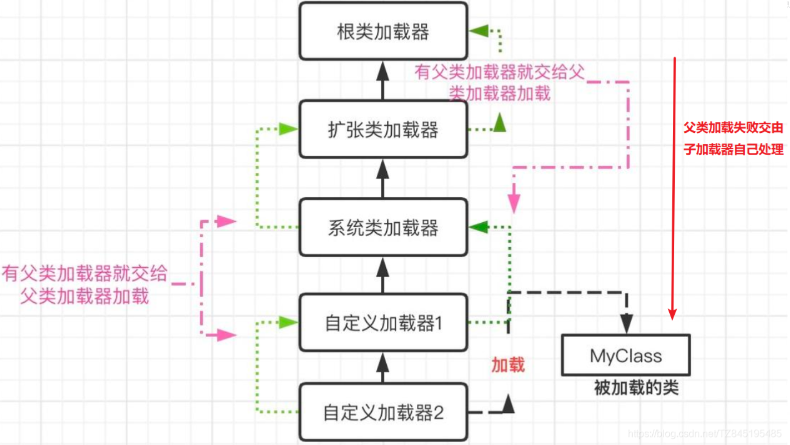
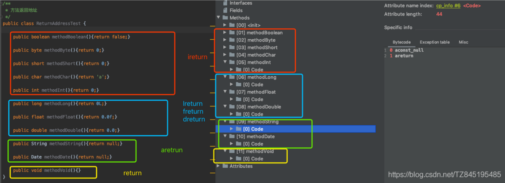
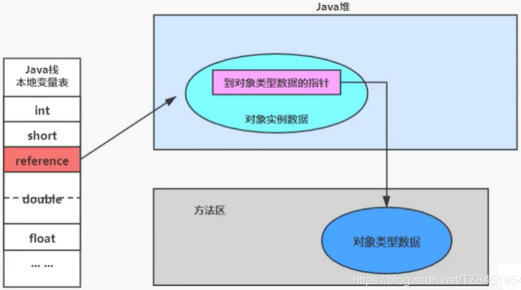
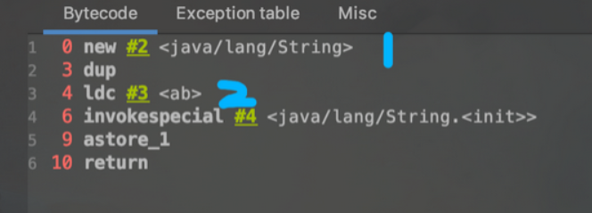
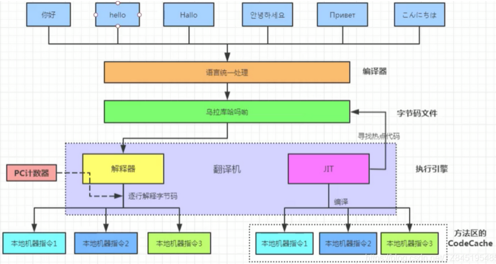
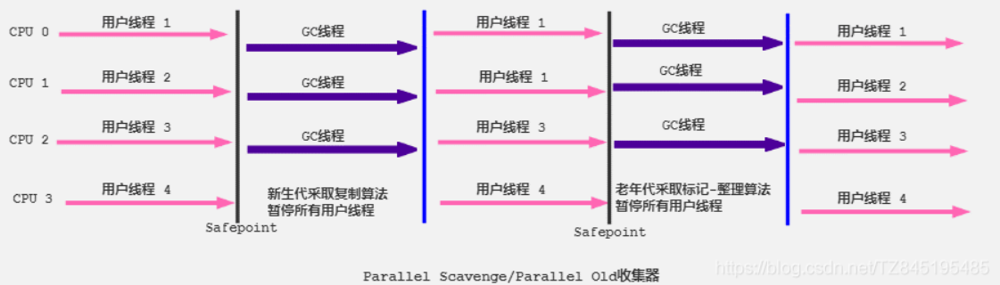

深入理解JVM
JVM概述
什么是JVM

- JVM 是 java虚拟机，是用来执行java字节码(二进制的形式)的虚拟计算机
- JVM是运行在操作系统之上的，与硬件没有任何关系
Java的跨平台及原理
- 跨平台：由Java编写的程序可以在不同的操作系统上运行。一次编写，多处运行
- 原理：编译之后的字节码文件和平台无关，需要在不同的操作系统上安装一个对应版本的虚拟机(JVM) (Java虚拟机不和包括java在内的任何语言绑定，它只与class文件这种二进制文件格式所关联。无论使用何种语言进行软件开发，只要将源文件编译为正确的Class文件，那么这种语言就可以在Java虚拟机上执行，可以说，统一而强大的Class文件结构，就是Java虚拟机的基石、桥梁)
JVM的组成

- 类加载子系统
- 运行时数据区[我们主要关注这里的堆、栈、方法区]
- 执行引擎(一般都是JIT编译器和解释器共存)
名词解释
JIT(即时编译器): 主要影响性能。在部分商用虚拟机中（如HotSpot），Java程序最初是通过解释器（Interpreter）进行解释执行的，当虚拟机发现某个方法或代码块的运行特别频繁时，就会把这些代码认定为“热点代码”。为了提高热点代码的执行效率，在运行时，虚拟机将会把这些代码编译成与本地平台相关的机器码，并进行各种层次的优化，完成这个任务的编译器称为即时编译器（Just In Time Compiler，下文统称JIT编译器）。
即时编译器并不是虚拟机必须的部分，Java虚拟机规范并没有规定Java虚拟机内必须要有即时编译器存在，更没有限定或指导即时编译器应该如何去实现。但是，即时编译器编译性能的好坏、代码优化程度的高低却是衡量一款商用虚拟机优秀与否的最关键的指标之一，它也是虚拟机中最核心且最能体现虚拟机技术水平的部分。
解释器：负责响应时间。逐行解释字节码。
三大商业虚拟机
- Sun HotSpot
- 它是Sun JDK和OpenJDK中所带的虚拟机，也是目前使用范围最广的Java虚拟机
- BEA JRocket
- 专注于服务端应用(JRockit内部不包含解释器实现，全部代码都靠即时编译器编译后执行)
- iBM J9
- 市场定位与hotspot接近，服务器端，桌面应用，嵌入式等
类的加载过程
类的加载分几步？
按照JAVA虚拟机规范，从class文件到加载到内存中的类，到类卸载出内存为止，它的整个生命周期包括7个阶段：
- 过程一：加载(Loading)
- 过程二：链接(Linking)，又分为三个部分
- 验证(Verification)
- 准备(Preparation)
- 解析(Resolution)
- 过程三：初始化(Initialization)
- 过程四：使用(Using)
- 过程五：卸载(Unloading)
在JAVA中数据类型分为基本数据类型和引用数据类型。基本数据类型由虚拟机预先定义。引用数据类型则需要进行类的加载。
过程一：加载(Loading)
类的加载指的是将类的.class文件中的二进制数据读取到内存中，存放在运行时数据区的方法区中，并创建一个大的Java.lang.Class对象，用来封装方法区内的数据结构。
在加载类时，Java虚拟机必须完成以下三件事情：
- 通过类的全名，获取类的二进制数据流
- 将这个字节流所代表的静态存储结构转化为方法区的运行时数据结构(Java类模型)
- 在内存中创建Java.lang.Class类的实例，表示该类型。作为方法区这个类的各种数据的访问入口
对于加载过程，简言之就是将Java类的字节码文件加载到内存中，并在内存中创建出Java类的原型——类模板对象。
类模板对象：Java类在JVM内存储的一个快照，JVM将从字节码文件中解析出的常量池、类字段、类方法等信息存储到类模板中，这样JVM在运行期间便能通过类模板而获取Java类中的任意信息，能够对Java类的成员变量进行遍历，也能进行Java方法的调用。 |
对于类的二进制数据流，虚拟机可以通过多种途径获得(只要所读取的字节码符合JVM规范即可)：
- 通过文件系统读入.class文件(最常见)
- 读入jar、zip等归档数据包，提取类文件
- 实现放在数据库中的类的二进制数据
- 使用类似于HTTP之类的协议通过网络加载
- 在运行时生成一段Class的二进制信息
Class实例的位置：
类将.class文件加载至方法区(元空间)后，会在堆中创建一个Java.lang.Class对象，用来封装类位于方法区内的数据结构，该Class对象是在加载类的过程中创建的，每个类都对应有一个Class类型的对象。
过程二：链接(Linking)
2-1 验证
验证：确保Class文件的字节流中包含的信息符合当前虚拟机要求，保证被加载类的正确性
- 确保Class文件的字节流中包含信息符合当前虚拟机的要求，保证被加载类的正确性，不会危害虚拟机自身安全
- 主要包括四种验证：
- 文件格式验证
- 是否以魔数oxCAFEBABE开头
- 主版本和副版本是否在当前Java虚拟机的支持范围内
- 数据中的每一项是否都拥有正确的长度等
- 元数据验证
- 这个类是否有除了Object之外的父类，这个类是否继承了final类？
- 是否实现了父类或接口中要求实现的方法？
- 类中的字段，方法是否与父类产生矛盾？
- 字节码验证
- 符号引用验证
- 文件格式验证

2-2 准备
准备：为类的静态变量分配内存并将其初始化为默认值，这些内存都将在方法区中分配
注意：
这时候进行内存分配的仅包括类变量(static)，而不包括实例变量，实例变量将会在对象实例化时随着对象一起分配在java堆中
这里所设置的初始值通常是数据类型默认的初始值，而不是在Java代码中被显示赋予的值
- 同时被final和static修饰的属性，在准备阶段就会被直接赋值。如下所示，value在准备阶段就会被直接赋值123
public static final int value = 123;
2-3 解析
解析：将常量池中的符号引用转换为直接引用的过程(将类、接口、字段和方法的符号引用转为直接引用)
- 虚拟机在加载Class文件时才会进行动态链接，也就是说，Class文件中不会保存各个方法和字段的最终内存布局信息，因此，这些字段和方法的符号引用不经过转换时无法直接被虚拟机使用的。当虚拟机运行起来时，需要从常量池中获得对应的符号引用，再在类加载过程中(初始化阶段)将其替换成直接引用，并翻译到具体的内存地址中
- 符号引用: 符号引用以一组符号来描述所引用的目标，符号可以是任何形式的字面量，只要使用时能无歧义地定位到目标即可。符号引用与虚拟机实现的内存布局无关，引用的目标并不一定已经加载到了内存中
- 直接引用: 直接引用可以是直接指向目标的指针，相对偏移量或是一个能间接定位到目标的句柄。直接引用是与虚拟机实现的内存布局相关的，同一个符号引用在不同虚拟机实例上翻译出来的直接引用一般不会相同。但是它们能接受的符号引用都是一致的，因为符号引用的字面量形式明确定义在Java虚拟机规范的Class文件格式中。如果有了直接引用，那就说明目标必定已经存在于内存之中了
- Java虚拟机规范并没有明确要求解析阶段一定要按照顺序执行。在HotSpot VM中，加载、验证、准备和初始化会按照顺序有条不紊地执行，但链接阶段中的解析操作往往会伴随着JVM在执行完初始化之后再执行
- 符号引用有：类和接口的全限定名，字段的名称和描述符，方法的名称和描述符
过程三：初始化(Initialization)
初始化：
为类变量赋予正确的初始化值
初始化阶段就是执行类构造器方法<clinit>()的过程。此方法不需要定义，是javac编译器自动收集类中的所有变量的赋值动作和静态代码块中的语句合并而来
若该类具有父类，JVM会保证子类的<clinit>()执行前，父类的<clinit>()已经执行完成。clinit不同于类的构造方法(init)(由父及子，静态先行)
Java编译器不会为所有的类都产生<clinit>()初始化方法。哪些类在编译为字节码后，字节码中不会包含<clinit>()方法？
- 一个类中没有声明任何的静态变量，也没有静态代码块时
- 一个类中声明静态变量，但是没有明确使用类变量的初始化语句以及静态代码块来执行初始化操作时
- 一个类中包含static final修饰的基本数据类型的字段。如果这个static final变量不是通过方法或者构造器指定，则在链接阶段赋值；如果通过调用方法赋值，则也会生成<clinit>()
<clinit>()的调用会死锁么？
- 虚拟机会保证一个类的<clinit>()方法在多线程环境中被正确地加锁、同步，如果多个线程同时去初始化一个类，那么只会有一个线程去执行这个类的<clinit>()方法，其他线程都要阻塞等待，直到活动线程执行<clinit>()方法完毕
public class ClassInitTest { |

主动引用(触发在初始化阶段的Clinit方法)
当创建一个类的实例时，比如使用new关键字，或者通过反射、克隆、反序列化
访问某个类或接口的静态变量，或者对该静态变量赋值
调用类的静态方法
初始化一个子类(当初始化子类时，如果发现其父类还没有进行过初始化，则需要先触发其父类的初始化)
当虚拟机启动时，用户需要指定一个执行的主类(包含main()方法的类)，虚拟机会先初始化这个主类
JDK7开始提供的动态语言支持(涉及解析REF_getStatic、REF_putStatic、REF_invokeStatic方法句柄对应的类)
如果一个接口定义了default方法，那么直接实现或者间接实现该接口类的初始化，该接口要在其之前被初始化
# 注意,如果把A接口中的默认方法注释,那么就只输出:子类初始化......
输出:
CompareB的初始化
子类初始化.....
public class DemoB implements A{
static{
System.out.println("子类初始化......");
}
public static void main(String[] args) {
}
}
interface A{
public static final Thread t = new Thread() {
{
System.out.println("CompareB的初始化");
}
};
default void method1(){
System.out.println("====");
}
}
被动引用
除了以上的情况属于主动引用，其他的情况均属于被动引用。被动引用不会引起类的初始化，意味着没有<clinit>()的调用
调用ClassLoader类的loadClass()方法加载一个类，并不是对类的主动使用，不会导致类的初始化
当访问一个静态字段时，只有真正声明这个字段的类才会被初始化
当通过子类引用父类的静态变量，不会导致子类初始化
引用常量不会触发此类或接口的初始化。因为常量在链接阶段就已经被显式赋值了
通过数组定义类引用，不会触发此类的初始化
# 这里不会进行初始化,因为相当于parent只开辟了空间,没赋值
Parent[] parent = new Parent[10];
使用(Using)
- 任何一个类型在使用之前都必须经历过完整的加载、链接和初始化3个类加载步骤。一旦一个类型成功经历过这3个步骤之后，就可以使用了
- 开发人员可以在程序中访问和调用它的静态类成员信息(比如：静态字段、静态方法)或者使用new关键字为其创建对象实例
卸载(Unloading)
- 类、类的加载器、类的实例之间的引用关系
- 在类加载器的内部实现中，用一个Java集合来存放所加载类的引用。另一方面，一个Class对象总是会引用它的类加载器，调用Class对象的getClassLoader()方法，就能获得它的类加载器。由此可见，代表某个类的Class实例与其类的加载器之间为双向关联关系。
- 一个类的实例总是引用代表这个类的Class对象。在Object类中定义了getClass()方法，这个方法返回代表对象所属类的Class对象的引用。此外，所有的Java类都有一个静态属性class，它引用代表这个类的Class对象

方法区的垃圾回收
- 方法区的垃圾回收机制主要回收两部分内容：常量池中废弃的常量和不再使用的类型
- HotSpot虚拟机对常量池的回收策略是很明确的，只要常量池中的常量没有被任何地方引用，就可以被回收
- 判定一个常量是否”废弃”还是相对简单，而要判定一个类型是否属于”不再被使用的类”的条件就比较苛刻了，需要同时满足下面三个条件

类的卸载
- 启动类加载器加载的类型在整个运行期间是不可能被卸载的
- 被系统类加载器和扩展类加载器加载的类型在运行期间不太可能被卸载，因为系统类加载器实例或者扩展类的实例基本上在整个运行期间总能直接或者间接的被访问，其达到unreachable的可能性极小
- 开发者自定义的类加载器实例加载的类型只有在很简单的上下文环境中才能被卸载，而且一般还要借助于强制调用虚拟机的垃圾回收功能才可以做到。可以预想，稍微复杂点的应用场景中(比如: 很多时候用户在开发自定义类加载器实例的时候采用缓存的策略以提高系统性能)，被加载的类型在运行期间也是几乎不太可能被卸载的(至少卸载的时间是不确定的)
类加载器 ClassLoader
- ClassLoader的作用
- ClassLoader是Java的核心组件，所有的Class都是由ClassLoader进行加载的，ClassLoader负责通过各种方式将Class信息的二进制数据流读入JVM内部，转换为一个与目标类对应的java.lang.Class对象实例。然后交给Java虚拟机进行链接、初始化等操作。因此，ClassLoader在整个加载阶段只能影响到类的加载，而无法通过ClassLoader去改变类的链接和初始化行为。至于他是否可以运行，则由Execution Engine决定
- .class文件的显示加载与隐式加载的方式是指JVM加载class文件到内存的方式(在日常开发以上两种方式一般会混合使用)
- 显式加载：指的是在代码中通过调用ClassLoader加载class对象，如直接使用Class.forName(name)或getClassLoader().loadClass()加载class对象
- Class.forName(name)会执行类的加载、链接及初始化
- getClassLoader().loadClass()只会执行类的加载
- 隐式加载：则是不直接在代码中调用ClassLoader的方法加载class对象，而是通过虚拟机自动加载到内存中，如在加载某个类的class文件时，该类的class文件中引用了另外一个类的对象，此时额外引用的类将通过JCM自动加载到内存中
- 显式加载：指的是在代码中通过调用ClassLoader加载class对象，如直接使用Class.forName(name)或getClassLoader().loadClass()加载class对象
类加载器的分类与测试
类加载器的介绍
- JVM支持两种类型的类加载器，分别为引导类加载器(Bootstrap ClassLoader)和自定义类加载器(User-Defined ClassLoader)
- 从概念上来讲,自定义类加载器一般指的是程序中由开发人员自定义的一类类加载器,但是Java虚拟机规范并没有这么定义,而是将所有派生于抽象类ClassLoader的类加载器都划分为自定义类加载器
- 无论类加载器的类型如何划分, 在程序中我们常见的类加载器如下所示。除了顶层的启动类加载器外, 其余的类加载器都应当有自己的”父类”加载器

启动(引导)类加载器 Bootstrap ClassLoader
- 这个类加载使用C/C++语言实现的, 嵌套在JVM内部
- 它用来加载Java的核心类库(JAVA_HOME/jre/lib/rt.jar、resource.jar或sum.boot.class.path路径下的内容),用于提供JVM自身需要的类(String类就是使用的这个类加载器)
- 由于安全考虑,Bootstrap启动类加载器只加载包名为java、javax、sun等开头的类
- 并不继承自java.lang.ClassLoader,没有父加载器
- 加载扩展类和应用程序类加载器,并指定为他们的父类加载器
扩展类加载器 Extension ClassLoader
- Java语言编写,由sum.misc.Launcher$ExtClassLoader实现
- 派生于ClassLoader类,父类加载器为启动类加载器
- 从java.ext.dirs系统属性所指定的目录中加载类库, 或从JDK的安装目录的jre/lib/ext子目录(扩展目录)下加载类库。如果用户创建的JAR放在此目录下,也会自动由扩展类加载器加载
应用程序(系统)类加载器 App ClassLoader
- java语言编写,由sum.misc.Launcher$AppClassLoader实现
- 派生于ClassLoader类,父类加载器为扩展类加载器
- 它负责加载环境变量classpath或系统属性java.class.path指定路径下的类库
- 该类加载是程序中默认的类加载器, 一般来说, Java应用的类都是由它来完成加载
- 通过ClassLoader的getSystemClassLoader()方法可以获取到该类加载器
用户自定义类加载器
- 在Java的日常应用程序开发中, 类的加载几乎是由上述3种类加载器相互配合执行的, 在必要时, 我们可以自定义类加载器, 来定制类的加载方式(自定义类加载器通常需要继承于ClassLoader)
- 体现Java语言强大生命力和巨大魅力的关键因素之一便是, Java 开发者可以自定义类加载器来实现类库的动态加载, 加载源可以是本地的JAR包, 也可以是网络上的远程资源
- 自定义 ClassLoader 的子类时候,我们常见的会有两种做法
- 重写loadClass()方法(不推荐,这个方法会保证类的双亲委派机制)
- 重写findClass()方法 –> 推荐
- 这两种方法本质上差不多, 毕竟loadClass()也会调用findClass(), 但是从逻辑上讲我们最好不要直接修改loadClass()的内部逻辑。建议的做法是只在findClass()里重写自定义类的加载方法, 根据参数指定类的名字, 返回对应的Class对象的引用。
Class.forName()与ClassLoader.loadClass()的区别
- Class.forName(): 是一个静态方法, 最常用的是Class.forName(String className); 根据传入的类的全限定名返回一个 Class 对象。该方法在将 Class 文件加载到内存的同时, 会执行类的初始化。如:Class.forName(“com.atguigu.java.HelloWorld”);
- ClassLoader.loadClass(): 这是一个实例方法, 需要一个 ClassLoader 对象来调用该方法。该方法将 Class 文件加载到内存时, 并不会执行类的初始化, 直到这个类第一次使用时才进行初始化。该方法因为需要得到一个 ClassLoader 对象, 所以可以根据需要指定使用哪个类加载器。
双亲委派机制
工作原理
- 如果一个类加载收到了类加载请求,它并不会自己先去加载,而是把这个请求委托给父类加载器去执行
- 如果父类加载器还存在其父类加载器, 则进一步向上委托, 依次递归, 请求最终将到达顶层的启动类加载器
- 如果父类的加载器可以完成类的加载任务, 就成功返回, 倘若父类加载器无法完成此加载任务, 子加载器才会尝试自己去加载, 这就是双亲委派模式

本质
规定了类加载的顺序是: 引导类加载器先加载, 若加载不到, 由扩展类加载器加载, 若还加载不到, 才会由系统类加载器或自定义的类加载器进行加载

源码分析
(双亲委派机制在java.lang.ClassLoader.loadClass(String,boolean)接口中体现)
- 先在当前加载器的缓存中查找有无目标类, 如果有, 直接返回
- 判断当前加载器的父加载器是否为空, 如果不为空, 则调用parent.loadClass(name, false)接口进行加载
- 反之, 如果当前加载器的父类加载器为空, 则调用findBootstrapClassOrNull(name)接口, 让引导类加载器进行加载
- 如果通过以上3条路径都没能成功加载, 则调用findClass(name)接口进行加载。该接口最终会调用java.lan g.ClassLoader接口的defineClass系列的native接口加载目标Java类
- 双亲委派的模型就隐藏在这第2和第3步中
双亲委派机制优势
- 避免类的重复加载, 确保一个类的全局唯一性(当父ClassLoader已经加载了该类的时候, 就没有必要子ClassLoader再加载一次)
- 保护程序安全, 防止核心API被随意篡改
(自定义类java.lang.String类是无法正确运行的)
双亲委托模式的弊端
检查类是否加载的委托过程是单向的, 这个方式虽然从结构上说比较清晰, 使各个ClassLoader的职责非常明确, 但是同时会带来一个问题, 即顶层的ClassLoader无法访问底层的ClassLoader所加载的类
结论
由于Java虚拟机规范并没有明确要求类加载器的加载机制一定要使用双亲委派模型, 只是建议采用这种方式而已。比如在Tomcat中, 类加载器所采用的加载机制就和传统的双亲委派模型有一定区别, 当缺省的类加载器接收到一个类的加载任务时, 首先会由它自行加载, 当它加载失败时,才会将类的加载任务委派给它的超类加载器去执行, 这同时也是Servlet规范推荐的一种做法
程序计数器
作用：
- 用来存储指向下一条指令的地址, 也是即将要执行的指令代码。由执行引擎读取下一条指令
特点：
- 是线程私有的、不会存在内存溢出
注意：
- 在物理上，程序计数器是用寄存器实现的，是整个cpu中最快的一个执行单元
- 它是唯一一个在java虚拟机规范中没有OOM(内存溢出)的区域
解释：
- 每个线程都有一个程序计数器, 是线程私有的, 就是一个指针, 指向方法区中的方法字节码(用来存储指向下一条指令的地址, 也是即将要执行的指令代码), 由执行引擎读取下一条指令, 是一个非常小的内存空间,几乎可以忽略不记
- 这块内存区域很小, 它是当前线程所执行的字节码的行号指示器, 字节码解释器通过改变这个计数器的值来选取下一条需要执行的字节码指令
- 如果执行的是一个Native方法, 那这个计数器是undefined

使用PC寄存器存储字节码指令地址有什么用呢?
- 因为CPU需要不停的切换各个线程, 这时候切换回来以后, 就得知道接着从哪开始继续执行
- JVM的字节码解释器就需要通过改变PC寄存器的值来明确下一条应该执行什么样的字节码指令
PC寄存器为什么设定为线程私有?
为了能够准确记录各个线程正在执行的当前字节码指令地址, 最好的办法自然是为每一个线程都分配一个PC寄存器
关于线程在JVM中的说明:
- 在Hotspot JVM里, 每个线程都与操作系统的本地线程直接映射。当一个Java线程准备好执行以后, 此时一个操作系统的本地线程也同时创建。Java线程执行终止后, 本地线程也会被回收
- 操作系统负责所有线程的安排调度到任何一个可用的CPU上。一旦本地线程初始化完毕, 它就会调用Java线程中的run方法
本地方法栈
本地接口 Native Interface
- 本地接口的作用是融合不同的编程语言为Java所用, 它的初衷是融合C/C++程序, Java诞生的时候是C/C++横行的时候, 要想立足, 必须由调用C/C++程序, 于是就在内存中专门开辟了一块区域处理标记为native的代码, 它的具体做法是在Native Method Stack中登记native方法, 在Execution Engine执行时加载native libraies
- 目前该方法的使用的越来越少了, 除非是与硬件有关的应用, 比如通过Java程序驱动打印机或者Java系统管理生产设备, 在企业级应用中已经比较少见。因为现在的异构领域间的通信很发达,比如可以使用Socket通信, 也可以使用Web Service等等
本地方法栈 Native Method Stack
它的具体做法是Native Method Stack中登记native方法, 在Execution Engine 执行时加载本地方法库
native方法的举例: Object类中的clone、wait、notify、 hashCode 等 Unsafe类都是native方法

虚拟机栈
概述
每创建一个线程就会创建一个Java栈, 每一个Java栈中都会有很多栈帧(局部变量表 | 操作数栈 | 动态链接 | 方法返回地址 | 一些附加信息)
注意: 虚拟机栈中不存在GC(垃圾回收),但是存在StackOverflowError和OOM
解释:
- 虚拟机栈(Java Virtual Machine Stacks)和线程是紧密联系的, 每创建一个线程时就会对应创建一个Java栈, 所以Java栈也是”线程私有”的内存区域
- 这个栈中又会对应包含多个栈帧, 每调用一个方法时就会往栈中创建并压入一个栈帧, 栈帧是用来存储方法数据和部分过程结果的数据结构
- 每一个方法从调用到最终返回结果的过程, 就对应一个栈帧从入栈到出栈的过程[先进后出]
栈帧中有如下部分组成:

可能导致栈内存溢出(StackOverflowError)的原因：
- 栈帧过多导致栈内存溢出(方法的递归调用,没设置正确停止条件)
- 局部数组过大。当函数内部的数组过大时,有可能导致堆栈溢出
Exception in thread "main" java.lang.StackOverflowError |
Java虚拟机规范允许Java栈的大小是动态的或者是固定不变的(可以通过-Xss参数调整栈的大小)
- 如果采用固定大小的Java虚拟机栈, 那每一个线程的Java虚拟机栈容量可以在线程创建的时候独立选定
- 如果线程请求分配的栈容量超过Java虚拟机栈允许的最大容量, Java虚拟机将会抛出一个StackoverflowError
- 如果Java虚拟机栈可以动态扩展, 并且在尝试扩展的时候无法申请到足够的内存, 或者是在创建新的线程时就没有足够的内存区创建对应的虚拟机栈, 那Java虚拟机将会抛出一个OutOfMemoryError
栈和堆的区别是什么?
- 从GC、OOM、StackOverflowError的角度
- 栈中不存在GC, 当固定大小的栈会发生StackOverflowError,动态的会发生OOM。堆中GC、OOM、StackOverflowError都存在
- 从堆栈的执行效率角度
- 栈的执行效率高于堆
- 内存大小, 数据结构
- 堆的空间比栈的大一般, 栈是一种FIFO先进后出的模型。堆中结构复杂,可以有链表、数组等
- 栈管运行, 堆管存储
局部变量表 LocalVariables
- 定义为一个数字数组, 主要用于存储方法参数和定义在方法体内的局部变量(这些数据类型包括各种基本数据类型、对象引用(reference)以及return Address类型)
- 由于局部变量是建立在线程的栈上, 是线程私有数据, 因此不存在数据安全问题
- 局部变量表所需容量大小是在编译期确定下来的。(并保存在方法Code属性的maximum local variables数据项中, 在方法运行期间不会改变局部变量表的大小的)
假设有这样一个类：
//使用javap -v 类.class 或者使用jclasslib |
通过javap -v LocalVariableTest.class可以查看字节码文件


- 关于slot的理解(引用数据类型(方法的返回地址)占用1个slot)
- 局部变量表中基本的存储单元是slot(变量槽)
- 在局部变量表中, 32位以内的类型只占有一个slot(包括引用数据类型), 64位的类型(long和double)占有两个slot
- byte、short、char在存储前被转换为int, boolean也被转换为int(0表示fasle,非0表示true)。long和double则占据两个slot
- Jvm会为局部变量表中的每一个slot都分配一个访问索引, 通过这个索引即可成功访问到局部变量表中指定的局部变量值
- 如果需要访问局部变量表中一个64bit的局部变量值时, 只需要使用前一个索引即可(比如:访问long或double类型变量)
- 如果当前帧是由构造方法或者实例方法创建,那么该对象引用this将会放在index为0的slot处

- 栈帧中的局部变量表中的槽位是可以复用的, 如果一个局部变量过了其作用域, 那么在其作用域之后申请的新的局部变量就很可能会复用过期局部变量的槽位, 从而达到节省资源的目的
public void localVar2(){ |
- 与GC Roots的关系: 局部变量表中的变量也是重要的垃圾回收根节点, 只要被局部变量表中直接或间接引用的对象都不会被回收
操作数栈 operand stack
- 我们说Java虚拟机的解释引擎是基于栈的执行引擎,其中的栈指的就是操作数栈。
- 每一个独立的栈帧中除了包含局部变量表以外, 还包含了一个后进先出的操作数栈, 也可以称之为表达式栈
- 操作数栈, 在方法执行过程中, 根据字节码指令, 往栈中写入数据或提取数据, 即入栈或出栈
- 每一个操作数栈都会拥有一个明确的栈深度用于存储数值, 其所需的最大深度在编译期就定义好了, 保存在方法的Code属性中, 为max_stack的值
- 栈中的任何一个元素都是可以任意的Java数据类型
- 32bit的类型占用一个栈单位深度
- 64bit的类型占用两个栈单位深度
- 如果被调用的方法带有返回值的话, 其返回值将会被压入当前栈帧的操作数栈中, 并更新PC寄存器中下一条需要执行的字节码指令
- 操作数栈, 主要用于保存计算机过程的中间结果, 同时作为计算过程中变量临时的存储空间
例子1：


例子2：
public class OperandStackTest { |


- 何为栈顶缓存技术？
- 前面提过, 基于栈式架构的虚拟机所使用的零地址指令更加紧凑,但完成一项操作的时候必然需要使用更多的入栈和出栈指令, 这同时也就意味着将需要更多的指令分派(instruction dispatch)次数和内存读/写次数。
- 由于操作数是存储在内存中的, 因此频繁地执行内存读/写操作必然会影响执行速度。为了解决这个题, HotSpot JVM的设计者们提出了栈顶缓存(ToS,Top-of-Stack Cashing)技术, 将栈顶元素缓存在物理CPU的寄存器中,以此降低对内存的读/写次数, 提升执行引擎的执行效率
- 有关栈顶缓存技术需要关注两个核心问题：
- 缓存了栈顶附近的多少个元素？如果缓存了n个元素，那么就叫n-TOS caching；
- 缓存带有多少种“状态”？如果有n种状态那么就叫n-state TOS caching。
动态链接 Dynamic Linking
- 运行时常量池位于方法区, 字节码中的常量池结构如下:
- 为什么需要常量池呢？
- 常量池的作用, 就是为了提供一些符号和常量, 便于指令的识别。下面提供一张测试类的运行时字节码文件格式
- 每一个栈帧内部都包含一个指向运行时常量池Constant pool或该栈帧所属方法的引用。包含这个引用的目的就是为了支持当前方法的代码能够实现动态链接。比如invokedynamic指令
- 在Java源文件被编译成字节码文件中时, 所有的变量和方法引用都作为符号引用(symbolic Refenrence)保存在class字节码文件的常量池里。比如: 描述一个方法调用了另外的其他方法时,就是通过常量池中指向方法的符号引用来表示的,那么动态链接的作用就是为了将这些符号引用(#)最终转换为调用方法的直接引用
- 方法的调用: (小插曲)难点
- 静态链接(早期绑定): 当一个字节码文件被装载进JVM内部时, 如果被调用的目标方法在编译期可知, 且运行期保持不变时。这种情况下将调用方法的符号引用转换为直接引用的过程称之为静态链接 (invokestatic | invokespecial)
- 动态链接(晚期绑定): 如果被调用的方法在编译期无法被确定下来,也就是说,只能够在程序运行期将调用方法的符号引用转换为直接引用,由于这种引用转换过程具备动态性,因此也就被称之为动态链接。**
体现了多态** (invokevirtual | invokeinterface) 非虚方法:如果方法在编译器就确定了具体的调用版本,这个版本在运行时是不可变的。这样的方法称为非虚方法(静态方法、私有方法、final方法、实例构造器(实例已经确定,this()表示本类的构造器)、父类方法(super调用)都是非虚方法)- 其他所有体现多态特性的方法称为虚方法
- 如下指令要重点掌握
普通调用指令: |
- 关于invokedynamic指令
- JVM字节码指令集一直比较稳定, 一直到java7才增加了一个invokedynamic指令, 这是Java为了实现【动态类型语言】支持而做的一种改进
- 动态类型语言和静态类型语言两者的却别就在于对类型的检查是在编译期还是在运行期, 满足前者就是静态类型语言, 反之则是动态类型语言。
- Java是静态类型语言(尽管lambda表达式为其增加了动态特性), js, python是动态类型语言
方法返回地址 Return Address
存放调用该方法的PC寄存器的值
执行引擎遇到任意一个方法返回的字节码指令(return), 会有返回值传递给上层的方法调用者, 简称正常完成出口
- 一个方法在正常调用完成之后究竟需要使用哪一个返回指令还需要根据方法返回值的实际数据类型而定
- 在字节码指令中, 返回指令包含ireturn(当返回值是boolena、byte、char、short和int类型时使用)、lreturn、freturn、dreturn以及areturn(引用类型的)
- 另外还有一个return指令供声明为void的方法、实例初始化方法、类和接口的初始化方法使用

在方法执行的过程中遇到了异常(Exception), 并且这个异常没有在方法内进行处理, 也就是只要在本方法的异常表中没有搜素到匹配的异常处理器, 就会导致方法退出, 简称异常完成出口
一些附加信息
栈帧中还允许携带与Java虚拟机实现相关的一些附加信息。例如, 对程序调试提供支持的信息
问题小结与扩展
- 栈溢出的情况? 栈溢出:StackOverflowError
栈中是不存在GC的, 存在OOM和StackOverflowError- 栈的大小可以是固定大小的, 也可以是动态变化(动态扩展)的
如果是固定的, 那么会抛出StackOverflowError
如果是动态扩展的, 那么会抛出OOM异常(java.lang.OutOfMemoryError)
- 栈的大小可以是固定大小的, 也可以是动态变化(动态扩展)的
- 调整栈大小, 就能保证不出现溢出吗?
- 不能。因为调整栈大小, 只会减少出现溢出的可能, 栈大小不是可以无限扩大的, 所以不能保证不出现溢出
- 分配的栈内存越大越好吗?
- 不是, 因为增加栈大小 ,会造成每个线程的栈都变的很大, 使得一定的栈空间下, 能创建的线程数量会变小
- 垃圾回收是否会涉及到虚拟机栈?
- 不会; 垃圾回收只会涉及到方法区和堆中,方法区和堆也会存在溢出的可能。程序计数器, 只记录运行下一行的地址, 不存在溢出和垃圾回收。虚拟机栈和本地方法栈, 都是只涉及压栈和出栈, 可能存在栈溢出, 不存在垃圾回收
堆
堆的概述(共享|垃圾回收)
- 一个JVM实例只存在一个堆内存，堆也是Java内存管理的核心区域
- 堆可以在物理上不连续的内存空间中，但在逻辑上是连续的
- Java堆区在JVM启动的时候即被创建，其空间大小也是确定的。是JVM管理最大的一块内存空间
- 所有的线程共享Java堆, 在这里还可以划分线程私有的缓冲区(Thread Local Allocation Buffer,TLAB)
- 在方法结束后, 堆中的对象不会马上被移除, 仅仅在垃圾收集的时候才会被移除 (注意: 一个进程就是一个JVM实例, 一个进程中包含多个线程)
举例，有如下程序：
public class SimpleHeap { |
堆的内存结构
- 现在垃圾收集器大部分都基于分带收集理论设计的, 堆空间细分为:
- jdk1.7 堆中的结构
- jdk 1.8 堆中的结构
堆空间大小的设置 -Xms -Xmx
- Java堆区用于存储Java对象实例, 那么堆的大小在JVM启动时就已经设定好了, 大家可以通过选项”-Xmx 和 -Xms”来设置
- -Xms(默认是物理内存的1/64): 表示堆区的起始内存
- -Xmx(默认是物理内存的1/4): 则用于表示堆区的最大内存
- 通常会将-Xms和-Xmx两个参数配置相同的值, 其目的是为了能够在java垃圾回收机制清理完堆区后不需要重新计算堆区的大小, 从而提升性能
案例演示:
import java.util.concurrent.TimeUnit; |
发现在计算堆空间大小时并没有算上元空间
新生代与老年代参数设置 NewRation SurvivorRatio
- 配置新生代与老年代在堆结构占比
- 默认: -XX:NewRatio=2, 表示新生代与老年代的比例为1:2，新生代占1, 老年代占2, 新生代占整个堆的1/3
- 可以修改 -XX:NewRatio=4, 表示新生代占1, 老年代占4,新生代占整个堆的1/5
- -XX: SurvivorRatio调整这个空间比例(Eden空间和另外两个Survivor空间所占的比例是8:1:1)
- -Xmn: 设置新生代最大内存大小,一般使用默认值就可以了
- 几乎所有的Java对象都是在Eden区被new出来的, 绝大部分的Java对象的销毁都在新生代进行的
复制算法
- 一般过程(图解)
Eden区满后会开始进行垃圾回收(YGC/Minor GC)，此时幸存下来的对象会放入s0/s1中的一个，s0/s1会有一个区域为空，为空的也叫to区，另一个叫from区。每次YGC，都会把Eden和from区中幸存的对象放入to区。from区的对象存活时间达到阈值之后会放入老年代。
- 复制算法详解
(Eden满了,就会触发gc(minor gc),而gc就会把标识为垃圾的对象干掉, 不是垃圾的对象就要转移到幸存区, 把Eden让出来给新的对象用)
每次有对象从eden或from区放到to区，age都会+1
Minor GC | Major GC | Full GC
YONG GC(minor GC): 发生在新生代
只针对新生代区域的GC, 指发生在新生代的垃圾收集动作, 因为大多数Java对象存活率都不高, 所以Minor GC非常频繁, 一般回收速度也比较快
当Eden区满时, 会触发minor GC , Survivor满不会引发GC
minor gc 会引发STW,暂停其他用户线程,等垃圾回收结束,用户线程才能恢复
```
STW (stop the world): 指的是GC事件发生过程中，会产生应用程序的停顿。停顿产生时整个应用程序线程都会被暂停，没有任何响应, 有点像卡死的感觉，这个停顿称为STW。
2. Major GC: 发生在老年代
- major GC 是回收老年代的垃圾；major gc 的速度一般比Minor gc 慢10倍以上,STW时间更长
3. Full GC: 收集整个堆，包括young gen、old gen、perm gen（如果存在的话）等所有部分的模式
- full GC是回收老年代和年轻代的垃圾
- full gc 是开发调优中尽量避免的, 这样暂时时间会短一些
### 针对不同年龄阶段的对象分配原则
1. 优先分配到Eden
2. 大对象直接分配到老年(尽量避免程序中出现过多的大对象)
3. 长期存活的对象分配到老年代
4. 动态对象年龄判断
- (如果Survivor区中相同年龄的所有对象大小的总和大于Survivor空间的一半, 年龄大于或等于该年龄对象可以直接进入老年代, 无须等到MaxTenurningThreshold中要求的年龄)
5. JDK6之后, 只要老年代的连续空间大于新生代对象总大小或者历次晋升的平均大小就会进行Minor GC, 否则将进行Full GC
### TLAB(Thread Local Allocation Buffer)
1. **从内存模型而不是垃圾收集的角度, 对Eden区域继续进行划分, JVM为每个线程分配了一个私有缓存区域, 它包含在Eden空间内**
2. **尽管不是所有的对象实例都能够在TLAB中成功分配内存, 但JVM确实是将TLAB作为内存分配的首选**
3. 默认情况下, TLAB空间的内存非常小, 仅占有整个Eden空间的1%, 当然可通过选项"-XX:TLABWasteTargetPercent"设置TLAB空间所占用Eden空间的百分比大小
4. 一旦对象在TLAB空间分配内存失败时, JVM就会尝试着通过使用加锁机制确保数据操作的原子性, 从而直接在Eden空间中分配内存


### 堆空间参数总结
1. **-XX:+PrintFlagsInitial : 查看所有的参数的默认初始值**
2. -XX:+PrintFlagsFinal : 查看所有的参数的最终值(可能会存在修改(:表示修改了),不再是初始值)
3. 具体查看某个参数的指令:
- jps: 查看当前运行中的进程
- jinfo -flag SurvivorRatio 进程id
4. **-Xms:初始堆空间内存 (默认为物理内存的1/64)**
5. **-Xmx:最大堆空间内存(默认为物理内存的1/4)**
6. -Xmn:设置新生代的大小。
7. -XX:NewRatio:配置新生代与老年代在堆结构的占比 (默认:-XX:NewRatio=2）
8. -XX:SurvivorRatio:设置新生代中Eden和S0/S1空间的比例 (默认是8)
9. -XX:MaxTenuringThreshold: 设置新生代中对象的年龄阈值
10. -XX:+PrintGCDetails: 输出详细的GC处理日志。如下这两种方式是简单的打印gc简要信息:
- -XX:+PrintGC
- -verbose:gc
### 逃逸分析
1. **如何将堆上的对象分配到栈,需要使用逃逸分析手段**
- 当一个对象在方法中被定义后,对象只在方法内部使用(这里关注的是这个对象的实体), 则认为没有发生逃逸。
- 当一个对象在方法中被定义后, 它被外部方法所引用, 则认为发生逃逸。例如作为调用参数传递到其他地方中
代码演示:
```java
//(1). 没有发生逃逸的对象,则可以分配到栈上,随着方法执行的结束,栈空间就被移除
public void my_method() {
V v = new V();
// use v
// ....
v = null;
}
//(2). 下面代码中的 StringBuffer sb 发生了逃逸
public static StringBuffer createStringBuffer(String s1, String s2) {
StringBuffer sb = new StringBuffer();
sb.append(s1);
sb.append(s2);
return sb;
}
//如果想要StringBuffer sb不发生逃逸,可以这样写
public static String createStringBuffer(String s1, String s2) {
StringBuffer sb = new StringBuffer();
sb.append(s1);
sb.append(s2);
return sb.toString();
}
- 在JDK1.7版本之后, HotSpot中默认就已经开启了逃逸分析
- 通过选项”-XX:+PrintEscapeAnalysis”查看逃逸分析的筛选结果
- 使用逃逸分析,编译器可以对代码做如下优化:
- 栈上分配: 将堆分配转化为栈分配。如果一个对象在子程序中被分配, 要使指向该对象的指针永远不会发生逃逸, 对象可能是栈上分配的候选, 而不是堆上分配
- 同步省略: 如果一个对象被发现只有一个线程被访问到, 那么对于这个对象的操作可以不考虑同步。
- 分离对象或标量替换: 有的对象可能不需要作为一个连续的内存结构存在也可以被访问到, 那么对象的部分(或全部)可以不存储在内存, 而是存储在CPU寄存器中
栈上分配
JIT编译器在编译期间根据逃逸分析的结果, 发现如果一个对象并没有逃逸出方法的话, 就可能被优化成栈上分配
代码举例:
/** |
此时未开启逃逸分析，通过日志打印发现发生了GC
[GC (Allocation Failure) [PSYoungGen: 65536K->560K(76288K)] 65536K->568K(251392K), 0.0017179 secs] [Times: user=0.01 sys=0.00, real=0.00 secs] |
可以通过改变设置开启逃逸分析:
- -Xmx256m -Xms256m -XX:+DoEscapeAnalysis -XX:+PrintGCDetails
此时查看日志，发现并没有发生GC(栈上分配确实快很多)
花费的时间为: 4 ms |
同步省略 锁消除
从JIT角度看相当于无视它了, 这个锁对象没有被共享给其他线程
比如下面的代码，虽然加了同步代码块，但是并没有起到锁的作用。代码中堆hellis这个对象加锁(每个线程都有一个hellis对象的锁)，但是hellis对象的生命周期只在f()方法中，并不会被其他线程所访问到，所以在编译阶段就会被优化掉。
public void f() { |
注意: 字节码文件中并没有进行优化,可以看到加锁和释放锁的操作依然存在,同步省略操作是在解释运行时发生的
分离对象或标量替换
标量(scalar)是指一个无法再分解成更小的数据的数据。Java中的原始数据类型就是标量
相对的, 那些还可以分解的数据叫做聚合量(Aggregate), Java中的对象就是聚合量, 因为他可以分解成其他聚合量和标量
在JIT阶段, 如果经过逃逸分析, 发现一个对象不会被外界访问的话, 那么经过JIT优化, 就会把这个对象拆解成若干个成员变量来代替。这个过程就是标量替换
举例:
public static void main(String args[]) { |
方法区
概述
方法区在JVM启动的时候被创建, 并且它的实际的物理内存空间和Java堆区一样都可以是不连续的, 关闭Jvm就会释放这个区域的内存
方法区是逻辑上是堆的一个组成部分, 但是在不同虚拟机里头实现是不一样的，最典型的就是永久代(PermGen space)和元空间(Metaspace)
(注意：方法区是一种规范，而永久代和元空间是它的一种实现方式)
方法区的大小决定了系统可以保存多少个类, 如果系统定义了太多的类, 导致方法区溢出, 虚拟机同样会抛出内存溢出错误：(java.lang.OutOfMemoryError:PermGen space、java.lang.OutOfMemoryError:Metaspace)
- 加载大量的第三方的jar包
- tomcat部署的工程过多(30-50个)
- 大量动态的生成反射类
对于HotspotJVM而言, 方法区还有一个别名叫非堆(Non-heap),目的就是要和堆分开, 方法区可以看成一块独立于Java堆的内存空间
内部结构
- 《深入理解Java虚拟机》书中对方法区存储内容描述如下：它用于存储已被虚拟机加载的类型信息、常量、静态变量、即时编译器编译后的代码缓存等
类型信息: 对每个加载的类型(类class、接口interface、枚举enum、注解annotation), JVM必须在方法区中存储以下类型信息：
- 这个类型的完整有效名称（全名=包名.类名）
- 这个类型直接父类的完整有效名（对于interface或是java. lang.Object，都没有父类）
- 这个类型的修饰符（public， abstract， final的某个子集）
- 这个类型直接接口的一个有序列表
**域信息:**（成员变量）
- JVM必须在方法区中保存类型的所有域的相关信息以及域的声明顺序
- 域的相关信息包括：域名称、域类型、域修饰符（public， private， protected， static， final， volatile， transient的某个子集）
方法信息：JVM必须保存所有方法的以下信息，同域信息一样包括声明顺序
- 方法名称
- 方法的返回类型（或void）
- 方法参数的数量和类型（按顺序）
- 方法的修饰符（public， private， protected， static， final，synchronized， native ， abstract的一个子集）
- 方法的字节码（bytecodes）、操作数栈、局部变量表及大小（ abstract和native 方法除外）
- 异常表（ abstract和native方法除外）。每个异常处理的开始位置、结束位置、代码处理在程序计数器中的偏移地址、被捕获的异常类的常量池索引
non-final的类变量
public static int count;
descriptor: I
flags: ACC_PUBLIC, ACC_STATIC
public static final int number;
descriptor: I
flags: ACC_PUBLIC, ACC_STATIC, ACC_FINAL
ConstantValue: int 2对于static修饰的变量，如果未被final进行修饰，则在链接阶段的准备阶段进行默认初始化赋值，在初始化阶段进行显式赋值
对于static+final修饰的变量，有两个地方进行显式赋值：
- 对于基本数据类型的字段来说，如果使用static final修饰，则显式赋值(直接赋值常量，而非调用方法)通常是在链接阶段的准备环节进行
- 对于String来说，如果使用字面量的方式赋值，使用static final修饰的话，则显式赋值通常是在链接阶段的准备环节进行
- 除以上情况外，则在初始化阶段<clinit>()中赋值
以下代码不会报空指针异常：
public class MethodAreaTest { |
方法区的演进细节
- Jdk 1.6 及之前：有永久代，静态变量及字符串常量池存放在永久代上
- Jdk 1.7: 有永久代，但已经逐步”去永久代”，字符串常量池、静态变量移除, 保存在堆中。运行时常量池仍在永久代中
- jdk 1.8 及之后: 无永久代，运行时常量池在元空间。但静态变量、字符串常量池仍在堆中
为什么要用元空间取代永久代？
为永久代设置空间大小是很难确定的
- 永久代参数设置过小, 在某些场景下, 如果动态加载的类过多, 容易产生Perm区的OOM, 比如某个实际Web工程中, 因为功能点比较多, 在运行过程中, 要不断动态加载很多类, 经常出现致命错误
- 永久代参数设置过大,导致空间浪费
- 默认情况下,元空间的大小受本地内存限制
对永久代进行调优是很困难的
(方法区的垃圾收集主要回收两部分：常量池中废弃的常量和不再使用的类型, 而不再使用的类或类的加载器回收比较复杂, full gc 的时间长)
无用的类需要满足3个条件：
（1）该类所有的实例都已经被回收，即Java堆中不存在该类的任何实例；
（2）加载该类的ClassLoader已经被回收；
（3）该类对应的java.lang.Class对象没有在任何地方被引用，无法在任何地方通过反射访问该类的方法。虚拟机可以对满足上述3个条件的无用类进行回收，此处仅仅是“可以”，而并不是和对象一样（不使用了就必然回收）
StringTable为什么要调整?
- jdk7中将StringTable放到了堆空间中。因为永久代的回收效率很低, 在full gc的时候才能触发。而full gc是老年代的空间不足、永久代不足才会触发
- 这就导致StringTable回收效率不高,而我们开发中会有大量的字符串被创建, 回收效率低, 导致永久代内存不足, 放到堆里, 能及时回收内存
设置方法区大小
jdk7及以前:
- -XX:PermSize=100m(默认值是20.75M)
- -XX:MaxPermSize=100m(32位机器默认是64M,64位机器模式是82M)
jdk1.8及以后:
- -XX:MetaspaceSize=100m(windows下,默认约等于21M)
- -XX:MaxMetaspaceSize=100m(默认是-1,即没有限制)
常量池的理解
- 常量池，可以看做是一张表，虚拟机指令根据这张常量表找到要执行的类名，方法名，参数类型、字面量等信息
Constant pool: |
- 一个有效的字节码文件中除了包含类的版本信息、字段、方法以及接口等描述信息外，还包含一项信息那就是常量池表（Constant Pool Table），包括各种字面量和对类型域和方法的符号引用。
- 每个java源文件中的类、接口，编译后产生一个字节码文件。而 Java 中的字节码需要数据支持，通常这种数据会很大以至于不能直接存到字节码里，换另一种方式，可以存到常量池。这个字节码包含了指向常量池的引用。在动态链接的时候会用到运行时常量池
运行时常量池
- 运行时常量池，常量池是
*.class文件中的，当该类被加载，它的常量池信息就会放入运行时常量池，并把里面的符号地址变为真实地址 - 运行时常量池（ Runtime Constant Pool）是方法区的一部分。
- 常量池表（Constant Pool Table）是Class文件的一部分，用于存放编译期生成的各种字面量与符号引用，这部分内容将在类加载后存放到方法区的运行时常量池中。
- 运行时常量池中包含多种不同的常量, 包括编译期就已经明确的数值字面量，也包括到运行期解析后才能够获得的方法或者字段引用，此时不再是常量池中的符号地址了，这里换为真实地址。
- 方法区内常量池之中主要存放的两大类常量：字面量和符号引用。
- 字面量比较接近Java语言层次的常量概念，如文本字符串、被声明为final的常量值等。
- 而符号引用则属于编译原理方面的概念，包括下面三类常量：
- 类和接口的全限定名
- 字段的名称和描述符
- 方法的名称和描述符
如何证明静态变量存在哪
/** |
- staticObj随着Test的类型信息存放在方法区，instance0bj 随着Test的对象实例存放在Java堆，localobject则是存放在foo（）方法栈帧的局部变量表中
hsdb>scanoops 0x00007f32c7800000 0x00007f32c7b50000 JHSDB_ _TestCase$Obj ectHolder |
- 测试发现：三个对象的数据在内存中的地址都落在Eden区范围内，所以结论：只要是对象实例必然会在Java堆中分配
- 接着，找到了一个引用该staticObj对象的地方，是在一个java. lang.Class的实例里，并且给出了这个实例的地址。通过Inspector查看该对象实例，可以清楚看到这确实是一个
java.lang.Class类型的对象实例，里面有一个名为staticObj的实例字段：
- 从《Java 虛拟机规范》所定义的概念模型来看，所有 Class 相关的信息都应该存放在方法区之中，但方法区该如何实现，《Java 虚拟机规范》并未做出规定，这就成了一件允许不同虚拟机自己灵活把握的事情。JDK7 及其以后版本的 Hotspot 虚拟机选择把静态变量存储于Java 堆之中，从我们的实验中也明确验证了这一点.
方法区的垃圾回收
前言： |
方法区的垃圾收集主要回收两部分内容：常量池中废奔的常量和不再使用的类型
先来说说方法区内常量池之中主要存放的两大类常量：字面量和符号引用。 字面量比较接近Java语言层次的常量概念，如文本字符串、被声明为final的常量值等。而符号引用则属于编译原理方面的概念，包括下面三类常量
- 类和接口的全限定名
- 字段的名称和描述符
- 方法的名称和描述符
HotSpot虚拟机对常量池的回收策略是很明确的，只要常量池中的常量没有被任何地方引用，就可以被回收。回收废弃常量与回收Java堆中的对象非常类似。
判定一个常量是否“废弃”还是相对简单，而要判定一个类型是否属于“不再被使用的类”的条件就比较苛刻了。需要同时满足下面三个条件：
- 该类所有的实例都已经被回收，也就是Java堆中不存在该类及其任何派生子类的实例。
- 加载该类的类加载器已经被回收，这个条件除非是经过精心设计的可替换类加载器的场景，如OSGi、JSP的重加载等，否则通常是很难达成的
- 该类对应的java.lang.Class对象没有在任何地方被引用，无法在任何地方通过反射访问该类的方法
Java虛拟机被允许对满足上述三个条件的无用类进行回收，这里说的仅仅是“被允许”，而并不是和对象一样，没有引用了就必然会回收。
在大量使用反射、动态代理、CGLib等字节码框架，动态生成JSP以及oSGi这类频繁自定义类加载器的场景中，通常都需要Java虚拟机具备类型卸载的能力，以保证不会对方法区造成过大的内存压力
对象的实例化
创建对象的方式
- new 最常见的方式
- 变形1: Xxx的静态方法
- 变形2: XxBuilder/XxoxFactory的静态方法
- class的newInstance(): 反射的方式，只能调用空参的构造器，权限必须是public
- Constructor的newInstance(xxx): 反射的方式，可以调用空参、带参的构造器，权限没有要求
- 使用clone(): 不调用任何构造器，当前类需要实现Cloneable接口，实现clone()
- 使用反序列化: 从文件中、从网络中获取一个对象的二进制流
- 第三方库Objenesis
从字节码角度看待对象的创建过程
- 从最简单的Object ref = new Object()
- new: 如果找不到Class对象,则进行类加载。加载成功后, 则在堆中分配内存, 从Object 开始到本类路径上的所有属性值都要分配内存。分配完毕之后, 进行零值初始化。在分配过程中, 注意引用是占据存储空间的, 它是一个变量, 占用4个字节。这个指令完毕后, 将指向实例对象的引用变量压入虚拟机栈顶。
- dup: 在栈顶复制该引用变量, 这时的栈顶有两个指向堆内实例对象的引用变量。如果方法有参数, 还需要把参数压入操作栈中。两个引用变量的目的不同, 其中压至底下的引用用于赋值, 或者保存到局部变量表, 另一个栈顶的引用变量作为句柄调用相关方法。
- invokespecial: 调用对象实例方法, 通过栈顶的引用变量调用init方法。
补充:clinit是类初始化时执行的方法, 而init是对象初始化时执行的方法。
对象的实例化(六个步骤)
判断对象对应的类是否加载、链接、初始化
(虚拟机遇到一条new指令, 首先去检查这个指令的参数能否在Metaspace的常量池中定位到一个类的符号引用, 并且检查这个符号引用代表的类是否已经被加载、链接和初始化。(即判断类元信息是否存在)。如果没有, 那么在双亲委派模式下, 使用当前类加载器以ClassLoader+包名+类名为Key进行查找对应的.class文件。如果没有找到文件, 则抛出ClassNotFoundException异常, 如果找到, 则进行类加载, 并生成对应的Class类对象)
为对象分配内存: 首先计算对象占用空间大小, 接着在堆中划分一块内存给新对象。如果实例成员变量是引用变量, 仅分配引用变量空间即可, 即4个字节大小
(int、float、引用数据类型4个字节大小 | double、long 占八个字节)
如果内存规整,使用指针碰撞:
如果内存是规整的, 那么虚拟机将采用的是指针碰撞法(BumpThePointer)来为对象分配内存。意思是所有用过的内存在一边, 空闲的内存在另外一边, 中间放着一个指针作为分界点的指示器, 分配内存就是把指针向空闲那边挪动一段与对象大小相等的距离。如果垃圾收集器选择的是Serial、ParNew这种基于压缩算法的, 虚拟机采用这种分配方式。一般使用带有compact (整理)过程的收集器时,使用指针碰撞。
如果内存不规整,虚拟机需要维护一个列表, 使用空闲列表分配(CMS)
如果内存不是规整的, 已使用的内存和未使用的内存相互交错, 那么虛拟机将采用的是空闲列表法来为对象分配内存。意思是虚拟机维护了一个列表, 记录上哪些内存块是可用的,再分配的时候从列表中找到一块足够大的空间划分给对象实例, 并更新列表上的内容。这种分配方式成为“空闲列表(Free List)
说明：选择哪种分配方式由Java堆是否规整决定, 而Java堆是否规整又由所采用的垃圾收集器是否带有压缩整理功能决定。
指针碰撞：
空闲列表:
处理并发安全问题
在分配内存空间时, 另外一个问题是及时保证new对象时候的线程安全性：创建对象是非常频繁的操作, 虚拟机需要解决并发问题。虚拟机采用了两种方式解决并发问题：
- CAS (Compare And Swap)失败重试、区域加锁：保证指针更新操作的原子性
- TLAB把内存分配的动作按照线程划分在不同的空间之中进行,即每个线程在Java堆中预先分配一小块内存, 称为本地线程分配缓冲区, (TLAB, Thread Local Allocation Buffer)虚拟机是否使用TLAB, 可以通过-XX：+/-UseTLAB参数来设定
初始化分配到的空间: 赋予默认的初始化值; 比如int=0| boolean=false(默认的值)
设置对象的对象头：将对象的所属类(即类的元数据信息)、对象的HashCode和对象的GC信息、锁信息等数据存储在对象的对象头中。这个过程的具体设置方式取决于JVM实现。
执行init方法进行初始化(进行赋值的处理)
在Java程序的视角看来, 初始化才正式开始。初始化成员变量, 执行实例化代码块, 调用类的构造方法, 并把堆内对象的首地址赋值给引用变量。因此一般来说(由字节码中是否跟随有invokespecial指令所决定), new指令之后会接着就是执行方法, 把对象按照程序员的意愿进行初始化, 这样一个真正可用的对象才算完全创建出来。
对象的内存布局
- 对象内部结构分为：对象头、实例数据、对齐填充(保证8个字节的倍数)
- 对象头分为对象标记(Mark Word)和类元信息(Class Pointer), 类元信息存储的是指向该对象类元数据(class)的首地址
对象头(Header)
- 对象标记Mark Word默认存储 (HashCode、GC分代年龄、锁状态标志、线程持有的锁、偏向线程ID、偏向时间戳)等信息
- 这些信息都是与对象自身定义无关的数据，所以MarkWord被设计成一个非固定的数据结构以便在极小的空间内存存储尽量多的数据。
- 它会根据对象的状态复用自己的存储空间，也就是说在运行期间MarkWord里存储的数据会随着锁标志位的变化而变化。

- 对象头多大: 在64位系统中, Mark Word占了8个字节, 类型指针占了8个字节, 一共是16个字节
- 类元信息(又叫类型指针): 对象指向它的类元数据的指针，虚拟机通过这个指针来确定这个对象是哪个类的实例
实例数据（Instance Data）
说明: 它是对象真正存储的有效信息, 包括程序代码中定义的各种类型的字段(包括从父类继承下来的和本身拥有的字段)规则:
- 相同宽度的字段总被分配在一起
- 父类中定义的变量会出现在子类之前
- 如果CompactFields参数为true(默认为true), 子类的窄变量可能插入到父类变量的空隙
对齐填充（Padding）
- 不是必须的，也没特别含义，仅仅起到占位符作用
总结
代码演示：
public class CustomerTest { |
图解代码:
对象的访问定位
JVM是如何通过栈帧中的对象引用访问到其内部的对象实例的呢？-> 定位, 通过栈上reference访问
- 句柄访问

- 直接指针(HotSpot采用)

直接内存(Direct Memory)
- 不是虚拟机运行时数据区的一部分，也不是《Java虚拟机规范》中定义的内存区域
- 直接内存是Java堆外的、直接向系统申请的内存区间
- 代码演示：
/** |
- 来源于NIO，通过存在堆中的DirectByteBuffer操作Native内存
- 通常，访问直接内存的速度会优于Java堆。即读写性能高
- 直接内存大小可以通过MaxDirectMemorySize设置，如果不指定，默认与堆的最大值-Xmx参数值一致
- 简单理解：java process memory = java heap + native memory
字符串常量池
String的基本特性
- String: 字符串，使用一对””引起来表示。
- String s1 = “hello”；//字面量的定义方式
- String s2 = new String（“hello”）
- String声明为final的, 不可被继承
- String实现了Serializable接口：表示字符串是支持序列化的。 实现了Comparable接口：表示String可以比较大小
- String在jdk8及以前内部定义了final char[], value用于存储字符串数据。jdk9时改为byte[]
public final class String implements |
- String：代表不可变的字符序列。简称：不可变性。
- 通过字面量的方式（区别于new）给一个字符串赋值，此时的字符串值声明在字符串常量池中
- 字符串常量池中是不会存储相同内容的字符串的
- 使用 -XX:StringTableSize可设置StringTable的长度
- 在jdk6中StringTable是固定的，就是1009的长度，所以如果常量池中的字符串过多就会导致效率下降很快。StringTableSize设置没有要求
- 在jdk7中，StringTable的长度默认值是60013
- jdk8开始,1009是StringTable长度可设置的最小值
String的内存分配
- 常量池就类似一个Java系统级别提供的缓存。8种基本数据类型的常量池都是系统协调的，String类型的常量池比较特殊。它的主要使用方法有两种：
- 直接使用双引号声明出来的String对象会直接存储在常量池中(比如： String info = “abc” )
- 如果不是用双引号声明的String对象，可以使用String提供的intern()方法来获得直接指向常量池中对应字符串的引用
- new或toString()创建字符串后也会放入常量池，但会新建一个变量来指向常量池中字符串的引用
class Memory { |
字符串拼接操作
常量与常量的拼接结果在常量池，原理是编译期优化
常量池中不会存在相同内容的常量。
只要其中有一个是变量，结果就在堆中
(只有有一个是变量, 那么它会在堆中创建一个StringBuilder，调用append()方法进行添加操作，调用toString()方法转换为字符串[toString()方法其实就是:new String()])
如果拼接的结果调用intern()方法分为两种情况：
- JDK1.6，将这个字符串对象尝试放入串池、
- 如果字符串常量池中有，则并不会放入。返回已有的串池中的对象的地址
- 如果没有,它会在常量池中创建一个对象放入串池中，并返回串池中的对象地址
- JDK1.7，将这个字符串对象尝试放入串池
- 如果字符串常量池中有，则并不会放入。返回已有的串池中的对象的地址
- 如果没有，它不会创建一个对象，如果堆中已经创建这个字符串，那么会将堆中的引用地址赋给它
- JDK1.6，将这个字符串对象尝试放入串池、
|
证明常量与常量的拼接结果会在编译期进行优化
|
证明如果拼接的字符串中有变量，会在堆中新建一个对象，并指向其在字符串常量池中的引用
|
带有变量的字符串拼接的执行细节
/* |
如果拼接的都是常量引用，仍然采用编译期优化
intern()的使用
如果不是用双引号声明的String对象，可以使用String提供的intern方法: intern方法会从字符串常量池中查询当前字符串是否存在，若不存在就会将当前字符串放入常量池中。 |
new String(“ab”)会创建几个对象

通过查看字节码文件得知，一共创建了两个对象。
一个对象时new关键字在堆空间中创建的
另一个对象是字符串常量池中的对象”ab”，字节码指令ldc
new String(“a”) + new String(“b”)创建几个对象？
一共创建了五个对象
对象1: new StringBuilder()
对象2: new String(“a”)
对象3: 常量池中的”a”
对象4: new String(“b”)
对象5: 常量池中的”b”
注意! 最后返回结果是调用StringBuilder的toString()方法，此方法并不会在字符串常量池中创建对象。
关于String.intern()的面试题
/** |
public class StringIntern1 { |
总结String的intern（）的使用
如果拼接的结果调用intern()方法分为两种情况：
- JDK1.6，将这个字符串对象尝试放入串池
- 如果字符串常量池中有，则并不会放入。返回已有的串池中的对象的地址
- 如果没有,它会在常量池中创建一个对象放入串池中，并返回串池中的对象地址
- JDK1.7，将这个字符串对象尝试放入串池
- 如果字符串常量池中有，则并不会放入。返回已有的串池中的对象的地址
- 如果没有，它不会创建一个对象，如果堆中已经这个字符串，那么会将堆中的引用地址赋给它
public class StringExer1 { |
intern()效率测试
大的网站平台，需要内存中存储大量的字符串。比如社交网站，很多人都存储：北京市、海淀区等信息。这时候如果字符串都调用 intern()方法，就会明显降低内存的大小。
/** |
StrtingTable的垃圾回收(了解)
/** |
执行引擎
执行引擎概述
执行引擎是Java虚拟机的核心组成部分之一
JVM的主要任务是负责装载字节码到其内部,但字节码并不能够直接运行在操作系统之上,因为字节码指令并非等价于本地机器指令,它内部包含的仅仅只是一些能够被JVM所识别的字节码指令、符号表和其他辅助信息
那么,如果想让一个Java程序运行起来、执行引擎的任务就是将字节码指令解释/编译为对应平台上的本地机器指令才可以。简单来说,JVM中的执行引擎充当了将高级语言翻译为机器语言的译者
执行引擎的工作过程 (从外观上来看,所有的Java虚拟机的执行引擎输入、输出都是一致的：输入的是字节码二进制流,处理过程是字节码解析执行的等效过程,输出的是执行结果)
- 执行引擎在执行的过程中究竟需要执行什么样的字节码指令完全依赖于PC寄存器
- 每当执行完一项指令操作后,PC寄存器就会更新下一条需要被执行的指令地址
- 当然方法在执行的过程中,执行引擎有可能会通过存储在局部变量表中的对象引用准确定位到存储在Java堆区中的对象实例信息,以及通过对象头中的元数据指针定位到目标对象的类型信息。

Java代码编译和执行过程
大部分的程序代码转换成物理机的目标代码或虚拟机能执行的指令集之前，都需要经过下面图中的各个步骤：
什么是解释器(Interpreter), 什么是JIT编译器？
- 解释器: 当Java虚拟机启动时会根据预定义的规范对字节码采用逐行解释的方式执行,将每条字节码文件中的内容“翻译”为对应平台的本地机器指令执行
- JIT (Just In Time Compiler)编译器(即时编译器): 就是虚拟机将源代码直接编译成和本地机器平台相关的机器语言
为什么说Java是半编译半解释型语言?
- JDK1.0时代, 将Java语言定位为“解释执行”还是比较准确的。再后来, Java也发展出可以直接生成本地代码的编译器
- 现在JVM在执行Java代码的时候,通常都会将解释执行与编译执行二者结合起来进行

机器码、指令、汇编语言
机器码：各种用二进制编码方式表示的指令，叫做机器指令码。开始，人们就用它采编写程序，这就是机器语言(0 | 1 组成的)
机器语言虽然能够被计算机理解和接受，但和人们的语言差别太大，不易被人们理解和记忆，并且用它编程容易出差错
用它编写的程序一经输入计算机，CPU直接读取运行，因此和其他语言编的程序相比，执行速度最快
机器指令与CPU紧密相关，所以不同种类的CPU所对应的机器指令也就不同
指令就是把机器码中特定的0和1序列，简化成对应的指令（一般为英文简写，如mov，inc等），可读性稍好
- (由于不同的硬件平台，执行同一个操作，对应的机器码可能不同，所以不同的硬件平台的同一种指令（比如mov），对应的机器码也可能不同)
指令集
- 不同的硬件平台，各自支持的指令，是有差别的。因此每个平台所支持的指令，称之为对应平台的指令集
- 如常见的 (x86指令集，对应的是x86架构的平台 | ARM指令集，对应的是ARM架构的平台 )
汇编语言
- 在汇编语言中，用助记符（Mnemonics）代替机器指令的操作码，用地址符号（Symbol）或标号（Label）代替指令或操作数的地址
- 在不同的硬件平台，汇编语言对应着不同的机器语言指令集，通过汇编过程转换成机器指令
(由于计算机只认识指令码，所以用汇编语言编写的程序还必须翻译成机器指令码，计算机才能识别和执行)
高级语言
- 为了使计算机用户编程序更容易些，后来就出现了各种高级计算机语言。高级语言比机器语言、汇编语言更接近人的语言
- 当计算机执行高级语言编写的程序时，仍然需要把程序解释和编译成机器的指令码。完成这个过程的程序就叫做解释程序或编译程序
解释器 -负责响应时间
- JVM设计者们的初衷仅仅只是单纯地为了满足Java程序实现跨平台特性,因此避免采用静态编译的方式直接生成本地机器指令, 从而诞生了实现解释器在运行时采用逐行解释字节码执行程序的想法。
- 解释器真正意义上所承担的角色就是
一个运行时“翻译者”, 将字节码文件中的内容“翻译”为对应平台的本地机器指令执行 - 当一条字节码指令被解释执行完成后, 接着再根据PC寄存器中记录的下一条需要被执行的字节码指令执行解释操作
JIT编译器 -主要影响性能
- HostSpot JVM的执行方式：当虛拟机启动的时候，解释器可以首先发挥作用，而不必等待即时编译器全部编译完成再执行，这样可以省去许多不必要的编译时间。并且随着程序运行时间的推移，即时编译器逐渐发挥作用，根据热点探测功能，将有价值的字节码编译为本地机器指令，以换取更高的程序执行效率。
- 目前HotSpot VM所采用的热点探测方式是基于计数器的热点探测(采用基于计数器的热点探测, HotSpot VM将会为每一个 方法都建立2个不同类型的计数器,分别为方法调用计数器(Invocation Counter) 和回边计数器(BackEdge Counter) )
- 方法调用计数器用于统计方法的调用次数
- 回边计数器则用于统计循环体执行的循环次数
- 方法调用计数器
- 这个计数器就用于统计方法被调用的次数, 它的默认阈值在Client模式下是1500次, 在Server模式下是10000次。超过这个阈值,就会触发JIT编译
- 这个阈值可以通过虚拟机参数-XX:CompileThreshold来人为设定
- 当一个方法被调用时, 会先检查该方法是否存在被JIT编译过的版本, 如果存在, 则优先使用编译后的本地代码来执行。如果不存在已被编译过的版本, 则将此方法的调用计数器值加1, 然后判断方法调用计数器与回边计数器值之和是否超过方法调用计数器的阈值。如果已超过阈值, 那么将会向即时编译器提交一个该方法的代码编译请求
- 回边计数器
- 它的作用是统计一个方法中循环体代码执行的次数,在字节码中遇到控制流向后跳转的指令称为”边”(Back Edge)。显然,建立回边计数器统计的目的就是为了触发OSR编译(On Stack Replacem ent)
热度衰减
- 如果不做任何设置，方法调用计数器统计的并不是方法被调用的绝对次数，而是一个相对的执行频率，即一段时间之内方法被调用的次数。当超过一定的时间限度，如果方法的调用次数仍然不足以让它提交给即时编译器编译，那这个方法的调用计数器就会被减少一半，这个过程称为方法调用计数器的热度衰减(Counter Decay)，而这段时间就成为此方法统计的半衰周期(Counter Half Life Time)
- 进行热度衰减的动作是在虚拟机进行垃圾收集时顺便进行的，可以使用虚拟机参数-XX: -UseCounterDecay来关闭热度衰减，让方法计数器统计方法调用的绝对次数，这样，只要系统运行的时间足够长，绝大部分方法都会被编译成本地代码。
- 另外，可以使用-XX: CounterHalfLifeTime参数设置半衰周期的时间，单位是秒
HotSpot VM 可以设置程序执行方式
缺省情况下HotSpot VM是采用解释器与即时编译器并存的架构, 当然开发人员可以根据具体的应用场景,通过命令显式地为Java虚拟机指定在运行时到底是完全采用解释器执行,还是完全采用即时编译器执行。如下所示：
-Xint: 完全采用解释器模式执行程序；
-Xcomp: 完全采用即时编译器模式执行程序。如果即时编译出现问题,解释器会介入执行
-Xmixed:采用解释器 + 即时编译器的混合模式共同执行程序
HotSpot VM中的JIT分类
在HotSpot VM中内嵌有两个JIT编译器，分别为Client Compiler和Server Compiler，但大多数情况下我们简称为C1编译器和C2编译器。开发人员可以通过如下命令显式指定Java虚拟机在运行时到底使用哪一种即时编译器，如下所示：
C1和C2编译器不同的优化策略：
总结:
- 一般来讲, JIT编译出来的机器码性能比解释器高。
- C2编译器启动时长比C1编译器慢, 系统稳定执行以后, C2编译器执行速度远远快于C1编译器。
AOT编译器
- jdk9引入了AOT编译器(静态提前编译器，Ahead Of Time Compiler)
- 所谓AOT编译, 是与即时编译相对立的一个概念
- 即时编译指的是在程序的运行过程中, 将字节码转换为可在硬件上直接运行的机器码, 并部署至托管环境中的过程。
- 而 AOT 编译指的则是, 在程序运行之前, 便将字节码转换为机器码的过程 .java -> .class -> .so
- 最大好处：Java虚拟机加载已经预编译成二进制库, 可以直接执行。不必等待即时编译器的预热, 减少Java应用给人带来“第一次运行慢”的不良体验
- 缺点: 破坏了java”一次编译,到处运行”, 必须为每个不同硬件、OS编译对应的发行包。降低了Java链接过程的动态性, 加载的代码在编译期就必须全部已知
垃圾收集算法
标记阶段
- 引用计数法
- 可达性分析算法
清除阶段
- 复制算法
- 标记清除算法
- 标记整理(压缩)算法
- 分代收集
- 增量收集算法
- 分区算法
引用计数法
- 原理: 假设有一个对象A, 任何一个对象对A的引用, 那么对象A的引用计数器+1, 当引用结束时, 对象A的引用计数器就-1, 如果对象A的计数器的值为0, 就说明对象A没有引用了, 可以被回收
- 最大的缺陷: 无法解决循环引用的问题, gc永远都清除不了(这也是引用计数法被淘汰的原因)
代码演示:
/** |
- 注意: Java使用的不是引用计数法(Java之所以没有使用引用计数法,是由于不能解决循环引用问题) | (Python使用了是引用计数法)
枚举根节点做可达性分析
原理: 通过一系列名为”GC Roots”的对象(集合)作为起点, 从这个被称为GC ROOTs 的对象开始向下搜索, 如果一个对象到GC Roots没有任何引用链相连时, 则说明此对象是不可达对象(被回收), 否则就是可达对象
在java中,可作为GC Roots的对象有
- 虚拟机栈(栈帧中的局部变量表)中的引用对象(比如各个线程被调用的方法中使用到的参数、局部变量等)
- 本地方法栈中JNI(即一般来说native方法)中引用的对象[线程中的start方法]
- 静态属性引用的对象(比如:Java类的引用类型静态变量)
- 方法区中常量引用的对象(比如:字符串常量池(String Table)里的引用)
- 所有被synchronized持有的对象
- Java虚拟机内部的引用(基本数据类型对应的Class对象, 一些常驻的异常对象 [如NullPointerException、OutofMemoryError], 系统类加载器)
- 反映java虚拟机内部情况的JMXBean、JVMTI中注册的回调、本地代码缓存等
关于GCroot对象集合注意事项:
除了这些固定的GC Roots集合之外,根据用户所选用的垃圾收集器以及当前回收的内存区域不同,还可以有其他对象临时加入,共同构架完成整GC Roots 集合。比如: 分代收集和局部回收
解释: 如果只针对Java堆中的某一块区域进行垃圾回收（比如:典型的只针对新生代），必须考虑到内存区域是虚拟机自己的实现细节，更不是孤立封闭的，这个区域的对象完全有可能被其他区域的对象所引用，这时候就需要一并将关联的区域对象也加入GC Roots集合中去考虑，才能保证可达性分析的准确性。
注意：如果要使用可达性分析算法来判断内存是否可回收，那么分析工作必须在一个能保障一致性的快照中进行。这点不满足的话分析结果的准确性就无法保证。这点也是导致GC进行时必须”stop The world”的一个重要原因。即使是号称（几乎）不会发生停顿的CMS 收集器中，枚举根节点时也是必须要停顿的。
优势: 相对于引用计数法而言, 可达性分析算法不仅同样具备实现简单和执行高效等特点, 更重要的是该算法可以有效解决在引用计数算法中循环引用的问题, 防止内存泄漏的发生
finalization机制
finalization机制说明:
- finalize() 方法允许在子类中被重写, 用于对象被回收时进行资源释放。通常在这个方法中进行一些资源释放和清理的工作, 比如关闭文件、套接字和数据库连接等
- 当垃圾回收器发现没有引用指向一个对象, 即垃圾收集此对象之前,总会先调用这个对象的finalize()方法
- Java语言提提供了对象终止(finalization)机制来允许开发人员提供对象被销毁之前的自定义逻辑
不主动调用某个对象的finalize() 方法,应该交给垃圾回收机制调用,理由包括下面三点
- 在finalize()时可能会导致对象复活
- finalize()方法执行时间是没有保障的, 它完全由GC线程决定,极端情况下, 若不发生GC, 则finalize() 方法将没有执行机会
- 一个糟糕的finalize()会严重影响GC的性能
- 由于finalize()方法的存在, 虚拟机中的对象一般处于三种可能的状态
finalize( )方法中虚拟机的状态
如果从所有的根节点都无法访问到某个对象, 说明对象已经不再使用了。一般来说, 此对象需要被回收, 但事实上, 也并非是”非死不可”的, 这时候它们暂时处于”缓刑”阶段。一个无法触及的对象肯能在某一个条件下”复活”自己, 如果这样, 那么对它的回收就是不合理的。为此, 定义虚拟机中的对象可能有三种状态。如下:(掌握)
- 可触及的: 从根节点开始,可以到达这个对象
- 可复活的: 对象的所有引用都被释放, 但是对象有可能在finalize()中复活
- 不可触及的: 对象的finalize()被调用, 并且没有复活, 那么就会进入不可触及状态。不可触及的对象不可能被复活, 因为finalize()只会被调用一次
以上3种状态中, 是由于finalize()方法的存在, 进行的区分。只有对象不可触及才可以被回收
判断一个对象是否可以进行回收(理解)
判定一个对象objA是否可回收, 至少要经历两次标记过程:
- 如果对象objA到GC Roots没有引用链，则进行第一次标记
- 进行筛选，判断此对象是否有必要执行finalize()方法
- 如果对象objA没有重写finalize()方法，或者finalize()方法已经被虚拟机调用过，则虚拟机认为“没必要执行finalize()方法“，objA被判定为不可触及的。
- 如果对象objA重写了finalize()方法，且还未执行过，那么objA会被插入到F—Queue队列中，由一个虚拟机自动创建的、低优先级的Finalizer线程触发其finalize()方法的执行
- finalize()对象是对象逃脱死亡的最后机会，稍后GC会对F-Queue队列中的对象进行第二次标记。如果objA在finalize()方法中与引用链上的任何一个对象建立了联系，那么在第二次标记时，objA回被移出”即将回收”集合。之后，对象会再次出现没有引用存在的情况。在这个情况下，finalize()方法不会被再次调用，对象会直接变成不可触及的状态，也就是说，一个对象的finalize()方法只会被调用一次。
代码演示:
/** |
复制算法(Copying)
核心思想: 将活着的内存空间分为两块, 每次只使用其中一块, 在垃圾回收时将正在使用的内存中的存活对象复制到未被使用的内存块中, 之后清除正在使用的内存块中的所有对象, 交换两个内存的角色, 最后完成垃圾回收。
优点:
- 没有标记和清除过程, 实现简单, 运行高效
- 不会产生内存碎片, 且对象完整不丢
缺点:
- 浪费了10%的空间
- 对于G1这种分拆成为大量region的GC, 复制而不是移动, 意味着GC需要维护region之间对象引用关系, 不管是内存占用或者时间开销也不小。
注意: 复制算法需要复制的存活对象数量并不会太大, 或者说非常低才行。因为新生代中的对象一般都是朝生夕死的, 在新生代中使用复制算法是非常好的
标记清除算法(Mark一Sweep)
标记一清除算法(Mark一Sweep)是一种非常基础和常见的垃圾收集算法,该算法被J . McCarthy等人在1960年提出并并应用于Lisp语言
标记: Collector(垃圾回收器)从引用根节点开始遍历, 标记所有被引用的对象。一般是在对象的Header中记录为可达对象
清除: Collector(垃圾回收器)对堆内存从头到尾进行线性的遍历,如果发现某个对象在其Header中没有标记为可达对象, 则将其回收
优点:
- 不需要额外的空间
缺点:
- 两次扫描，耗时严重
- 清理出来的空闲内存不连续，会产生内存碎片，需要维护一个空闲列表
注意: 这里所谓的清除并不是真的置空, 而是把需要清除的对象地址保存在空闲的地址列表里。下次有新对象需要加载时, 判断垃圾的位置空间是否够, 如果够, 就存放
标记整理(压缩)算法(Mark-Compact)
- 复制算法的高效性是建立在存活对象少、垃圾对象多的前提下的。这种情况在新生代经常发生, 但是在老年代, 更常见的情况是大部分对象都是存活对象。如果依然使用复制算法, 由于存活对象较多, 复制的成本也将很高。因此, 基于老年代垃圾回收的特性, 需要使用其他的算法。
- 标记一清除算法的确可以应用在老年代中, 但是该算法不仅执行效率低下, 而且在执行完内存回收后还会产生内存碎片, 所以JVM的设计者需要在此基础之上进行改进。标记一压缩(Mark一Compact) 算法由此诞生
- 1970年前后,G.L.Steele、C.J.Chene和D.S.Wise 等研究者发布标记一压缩算法。在许多现代的垃圾收集器中, 人们都使用了标记一压缩算法或其改进版本
执行过程:
- 第一阶段和标记一清除算法一样, 从根节点开始标记所有被引用对象
- 第二阶段将所有的存活对象压缩到内存的一端, 按顺序排放
- 最后, 清理边界外所有的空间
可以看到, 标记的存活对象将会被整理, 按照内存地址依次排列, 而未被标记的内存会被清理掉。如此一来, 当我们需要给新对象分配内存时, JVM只需要持有一个内存的起始地址即可, 这比维护一个空闲列表显然少了许多开销
压缩过后，可以采用指针碰撞法进行后续内存分配。
指针碰撞:(如果内存空间以规整和有序的方式分布, 即已用和未用的内存都各自一边, 彼此之间维系着一个记录下一次分配起始点的标记指针, 当为新对象分配内存时, 只需要通过修改指针的偏移量将新对象分配在第一个空闲内存位置上, 这种分配方式就叫做指针碰撞(Bump the Pointer))
优点:
- 消除了标记-清除算法中，内存区域分散的缺点，我们需要给新对象分配内存时，JVM只需要持有一个内存的起始地址即可
- 消除了复制算法中，内存减半的高额代价
缺点:
- 从效率上来说，标记-整理算法要低于复制算法
- 移动对象的同时，如果对象被其他对象引用，则还需要调整引用的地址。移动过程中，需要全程暂停用户线程，即STW
分代收集
分代算法是针对对象的不同特征, 而使用合适的算法, 这里面并没有实际上的新算法产生。与其说分代搜集算法是第五个算法, 不如说它是对前三个算法的实际应用, 在新生代使用复制算法Eden区和两个Survival区的比例为8:1:1, 只浪费10%的空闲空间。老年代使用标记清除/标记压缩算法
新生代(Young Gen):
- 新生代特点: 区域相对老年代较小, 对象生命周期短、存活率低,回收频繁。
- 这种情况复制算法的回收整理, 速度是最快的。复制算法的效率只和当前存活对象大小有关, 因此很适用于年轻代的回收。而复制算法内存利用率不高的问题, 通过hotspot中的两个survivor的设计得到缓解
老年代(Tenured Gen):
- 老年代特点: 区域较大, 对象生命周期长、存活率高, 回收不及年轻代频繁
- 这种情况存在大量存活率高的对象, 复制算法明显变得不合适。一般是由标记一清除或者是标记一清除与标记一整理的混合实现
- Mark阶段的开销与存活对象的数量成正比
- Sweep阶段的开销与所管理区域的大小成正相关
- Compact阶段的开销与存活对象的数据成正比
增量收集算法(了解)
上述现有的算法, 在垃圾回收过程中, 应用软件将处于一种stop the World的状态。在Stop the World状态下, 应用程序所有的线程都会挂起, 暂停一切正常的工作, 等待垃圾回收的完成。如果垃圾回收时间过长, 应用程序会被挂起很久, 将严重影响用户体验或者系统的稳定性。为了解决这个问题, 即对实时垃圾收集算法的研究直接导致了增量收集(Incremental Collecting) 算法的诞生
基本思想：
- 如果一次性将所有的垃圾进行处理, 需要造成系统长时间的停顿,那么就可以让垃圾收集线程和应用程序线程交替执行。每次, 垃圾收集线程只收集一小片区域的内存空间, 接着切换到应用程序线程。依次反复, 直到垃圾收集完成
- 总的来说, 增量收集算法的基础仍是传统的标记一清除和复制算法。增量收集算法通过对线程间冲突的妥善处理, 允许垃圾收集线程以分阶段的方式完成标记、清理或复制工作。
缺点:
使用这种方式, 由于在垃圾回收过程中, 间断性地还执行了应用程序代码, 所以能减少系统的停顿时间。但是, 因为线程切换和上下文转换的消耗, 会使得垃圾回收的总体成本上升, 造成系统吞吐量的下降
分区算法(了解)
一般来说, 在相同条件下, 堆空间越大, 一次GC时所需要的时间就越长, 有关GC产生的停顿也越长。为了更好地控制GC产生的停顿时间, 将一块大的内存区域分割成多个小块, 根据目标的停顿时间, 每次合理地回收若干个小区间, 而不是整个堆空间, 从而减少一次GC所产生的停顿。
分代算法将按照对象的生命周期长短划分成两个部分, 分区算法将整个堆空间划分成连续的不同小区间。每一个小区间都独立使用, 独立回收。这种算法的好处是可以控制一次回收多少个小区间。
垃圾收集的补充知识
System.gc()的理解
- 在默认情况下, 通过System.gc()或者Runtime.getRuntime().gc()的调用, 会显式触发Full GC，同时对老年代和新生代进行回收, 尝试释放被丢弃对象占用的内存。
- 然而System.gc()调用附带一个免责声明, 无法保证对垃圾收集器的调用(无法保证马上触发GC)。
- JVM实现者可以通过system.gc()调用来决定JVM的GC行为。而一般情况下, 垃圾回收应该是自动进行的, 无须手动触发, 否则就太过于麻烦了。在一些特殊情况下, 如我们正在编写一个性能基准,我们可以在运行之间调用System.gc()
- 以下代码, 如果注掉System.runFinalization(); 那么控制台不保证一定打印, 证明了System.gc()无法保证GC一定执行
public class SystemGCTest { |
内存溢出(out of Memory)
javadoc中对OutOfMemoryError的解释是, 没有空闲内存, 并且垃圾收集器也无法提供更多内存
说明Java虚拟机的堆内存不够。原因有二:
- Java虚拟机的堆内存设置不够(比如: 可能存在内存泄漏问题；也很有可能就是堆的大小不合理, 比如我们要处理比较可观的数据量, 但是没有显式指定JVM堆大小或者指定数值偏小。我们可以通过参数-Xms、-Xmx来调整)
- 代码中创建了大量大对象,并且长时间不能被垃圾收集器收集(存在被引用)
这里面隐含着一层意思是, 在抛出0utOfMemoryError之前, 通常垃圾收集器会被触发, 尽其所能去清理出空间。
当然,也不是在任何情况下垃圾收集器都会被触发的。比如,我们去分配一一个超大对象, 类似一个超大数组超过堆的最大值, JVM可以判断出垃圾收集并不能解决这个问题, 所以直接拋出OutOfMemoryError
内存泄漏(Memory Leak)
也称作“存储渗漏”。严格来说, 只有对象不会再被程序用到了, 但是GC又不能回收他们的情况, 才叫内存泄漏
但实际情况很多时候一些不太好的实践(或疏忽)会导致对象的生命周期变得很长甚至导致OOM, 也可以叫做宽泛意义上的“内存泄漏”
尽管内存泄漏并不会立刻引起程序崩溃, 但是一旦发生内存泄漏, 程序中的可用内存就会被逐步蚕食, 直至耗尽所有内存, 最终出现0utOfMemory异常, 导致程序崩溃。
Java中内存泄漏的8种情况:
- 单例模式(单例的生命周期和应用程序是一样长的, 所以单例程序中, 如果持有对外部对象的引用的话, 那么这个外部对象是不能被回收的, 则会导致内存泄漏的产生)
- 一些提供close的资源未关闭导致内存泄漏数据库连接(dataSourse.getConnection()), 网络连接(socket)和io连接必须手动close, 否则是不能被回收的。
- 静态集合类(如HashMap、LinkedList等等。如果这些容器为静态的, 那么它们的生命周期与JVM程序一致, 则容器中的对象在程序结束之前将不能被释放, 从而造成内存泄漏。简单而言, 长生命周期的对象持有短生命周期对象的引用, 尽管短生命周期的对象不再使用, 但是因为长生命周期对象持有它的引用而导致不能被回收)
- 内部类持有外部类(内部类持有外部类, 如果一个外部类的实例对象的方法返回了一个内部类的实例对象。这个内部类对象被长期引用了, 即使那个外部类实例对象不再被使用, 但由于内部类持有外部类的实例对象, 这个外部类对象将不会被垃圾回收, 这也会造成内存泄漏)
- 变量不合理的作用域(一般而言, 一个变量的定义的作用范围大于其使用范围, 很有可能会造成内存泄漏。另一方面, 如果没有及时地把对象设置为null, 很有可能导致内存泄漏的发生)
- 改变哈希值
- 缓存泄漏(内存泄漏的另一个常见来源是缓存, 一旦你把对象引用放入到缓存中, 他就很容易遗忘。比如: 之前项目在一次上线的时候, 应用启动奇慢直到夯死, 就是因为代码中会加载一个表中的数据到缓存(内存)中, 测试环境只有几百条数据, 但是生产环境有几百万的数据)
- 监听器和回调(内存泄漏另一个常见来源是监听器和其他回调, 如果客户端在你实现的API中注册回调, 却没有显式的取消, 那么就会积聚)
Stop the world
Stop-the-World, 简称STW, 指的是GC事件发生过程中, 会产生应用程序的停顿。停顿产生时整个应用程序线程都会被暂停, 没有任何响应, 有点像卡死的感觉, 这个停顿称为STW。
- STW事件和采用哪款GC无关, 所有的GC都有这个事件
- 哪怕是G1也不能完全避免STW情况的发生, 只能说垃圾回收器越来越优秀, 回收效率越来越高, 尽可能地缩短了暂停时间
- STW是JVM在后台自动发起和自动完成的。在用户不可见的情况下, 把用户正常的工作线程全部停掉
- 开发中尽量不要用System.gc(), 会导致full gc, 从而引发STW
什么情况下会导致STW:
- 可达性分析算法中枚举根节点(GC Roots)会导致所有Java执行线程停顿
- 进行gc的时候会发生STW现象(调用finalize()方法的时候会暂停用户线程)
- System.gc() | 调用finalize()方法
多线程中的并行与并发
并发(Concurrent)
- 在操作系统中, 是指一个时间段中有几个程序都处于己启动运行到运行完毕之间, 且这几个程序都是在同一个处理器上运行
- 并发不是真正意义上的“同时进行”, 只是CPU把一个时间段划分成几个时间片段(时间区间), 然后在这几个时间区间之间来回切换,由于CPU处理的速度非常快, 只要时间间隔处理得当, 即可让用户感觉是多个应用程序同时在进行
并行(Parallel)
- 当系统有一个以上CPU时, 当一个CPU执行一个进程时, 另一个CPU可以执行另一个进程, 两个进程互不抢占CPU资源, 可以同时进行, 我们称之为并行(Parallel)
- 其实决定并行的因素不是CPU的数量, 而是CPU的核心数量, 比如一个CPU多个核也可以并行
垃圾回收的并行、串行、并发
并行(Parallel): 指多条垃圾收集线程并行工作, 但此时用户线程仍处于等待状态。如ParNew、 Parallel Scavenge、 Parallel 0ld；
串行(Serial):
- 相较于并行的概念, 单线程执行
- 如果内存不够, 则程序暂停, 启动JVM垃圾回收器进行垃圾回收。回收完, 再启动程序的线程
- 并发(concurrent):
- 指用户线程与垃圾收集线程同时执行(但不一定是并行的, 可能会交替执行), 垃圾回收线程在执行时不会停顿用户程序的运行
- 在同一个时间段, 用户线程和垃圾回收线程同时执行
安全点(Safepoint)
程序执行时并非在所有地方都能停顿下来开始GC, 只有在特定的位置才能停顿下来开始GC, 这些位置称为”安全点(Safepoint)“
Safe Point的选择很重要, 如果太少可能导致GC等待的时间太长, 如果太频繁可能导致运行时的性能问题。大部分指令的执行时间都非常短暂, 通常会根据“是否具有让程序长时间执行的特征”为标准。比如: 选择些执行时间较长的指令作为Safe Point, 如方法调用、循环跳转和异常跳转等。
如何在GC发生时, 让所有线程都跑到最近的安全点停顿下来呢？
- 抢先式中断: (目前没有虚拟机采用了) 首先中断所有线程。如果还有线程不在安全点, 就恢复线程, 让线程跑到安全点。
- 主动式中断: 设置一个中断标志, 各个线程运行到Safe Point的时候主动轮询这个标志, 如果中断标志为真, 则将自己进行中断挂起。
安全区域(Safe Region)
Safe point机制保证了程序执行时, 在不太长的时间内就会遇到可进入GC的Safepoint。但是, 程序“不执行”的时候呢？例如线程处于Sleep状态或Blocked状态, 这时候线程无法响应JVM的中断请求, “走”到安全点去中断挂起, JVM也不太可能等待线程被唤醒。对于这种情况,就需要安全区域(Safe Region)来解决。
安全区域是指在一段代码片段中, 对象的引用关系不会发生变化, 在这个区域中的任何位置开始GC都是安全的。我们也可以把Safe Region看做是被扩展了的Safepoint。
实际执行时:
- 当线程运行到Safe Region的代码时, 首先标识已经进入了Safe Region, 如果这段时间内发GC, JVM会忽略标识为Safe Region状态的线程
- 当线程即将离开Safe Region时, 会检查JVM是否已经完成GC, 如果完成了, 则继续运行, 否则线程必须等待直到收到可以安全离开Safe Region的信号为止
引用
我们希望能描述这样一类对象: 当内存空间还足够时, 则能保留在内存中；如果内存空间在进行垃圾收集后还是很紧张, 则可以抛弃这些对象。
在JDK 1.2版之后, Java对引用的概念进行了扩充, 将引用分为强引用(Strong Reference)、软引用(Soft Reference) 、弱引用(Weak Reference)和虚引用(Phantom Reference) 4种, 这4种引用强度依次逐渐减弱
除强引用外, 其他3种引用均可以在java.lang.ref包中找到它们的身影。如下图, 显示了这3种引用类型对应的类, 开发人员可以在应用程序中直接使用它们。
Reference子类中只有终结器引用是包内可见的,其他3种引用类型均为public, 可以在应用程序中直接使用
简单介绍下强软弱虚引用:
- 强引用(Strong Reference): 最传统的“引用”的定义, 是指在程序代码之中普遍存在的引用赋值, 即类似“0bject obj=new object()”这种引用关系。无论任何情况下, 只要强引用关系还存在, 垃圾收集器就永远不会回收掉被引用的对象
- 软引用(Soft Reference): 在系统将要发生内存溢出之前, 将会把这些对象列入回收范围之中进行第二次回收。如果这次回收后还没有足够的内存, 才会抛出内存溢出异常。内存不足即回收
- 弱引用(Weak Reference): 被弱引用关联的对象只能生存到下一次垃圾收集之前。当垃圾收集器工作时, 无论内存空间是否足够, 都会回收掉被弱引用关联的对象。发现即回收
- 虚引用(Phantom Reference): 一个对象是否有虛引用的存在,完全不会对其生存时间构成影响, 也无法通过虚引用来获得一个对象的实例。为一个对象设置虛引用关联的唯一目的就是能在这个对象被收集器回收时收到一个系统通知(回收跟踪)
强引用(引用存在则不回收)
- 在Java程序中, 最常见的引用类型是强引用(普通系统99%以上都是强引用), 也就是我们最常见的普通对象引用, 也是默认的引用类型。
- 当在Java语言中使用new操作符创建一个新的对象, 并将其赋值给一个变量的时候, 这个变量就成为指向该对象的一个强引用。
- 只要强引用的对象是可触及的, 垃圾收集器就永远不会回收掉被引用的对象。
- 对于一个普通的对象, 如果没有其他的引用关系, 只要超过了引用的作用域或者显式地将相应(强)引用赋值为null, 就是可以当做垃圾被收集了, 当然具体回收时机还是要看垃圾收集策略。
- 相对的, 软引用、弱引用和虚引用的对象是软可触及、弱可触及和虛可触及的, 在一定条件下, 都是可以被回收的。所以, 强引用是造成Java内存泄漏的主要原因之一。
软引用(内存不足则回收)
- 软引用是用来描述一些还有用, 但非必需的对象。只被软引用关联着的对象, 在系统将要发生内存溢出异常前, 会把这些对象列进回收范围之中进行第二次回收, 如果这次回收还没有足够的内存, 才会抛出内存溢出异常。注意: 一次回收是回收强引用中没有引用的对象
- 软引用通常用来实现内存敏感的缓存。比如: 高速缓存就有用到软引用。如果还有空闲内存, 就可以暂时保留缓存, 当内存不足时清理掉, 这样就保证了使用缓存的同时, 不会耗尽内存
- 类似弱引用, 只不过Java虚拟机会尽量让软引用的存活时间长一些, 迫不得已才清理
在JDK 1.2版之后提供了java.lang.ref.SoftReference类来实现软引用
Object obj = new object()； //声明强引用 |
测试代码:
/** |
弱引用(发现即回收)
- 弱引用也是用来描述那些非必需对象, 被弱引用关联的对象只能生存到下一次垃圾收集发生为止。在系统GC时, 只要发现弱引用, 不管系统堆空间使用是否充足, 都会回收掉只被弱引用关联的对象
- 但是, 由于垃圾回收器的线程通常优先级很低, 因此, 并不一定能很快地发现持有弱引用的对象。在这种情况下, 弱引用对象可以存在较长的时间。
- 弱引用和软引用一样, 在构造弱引用时, 也可以指定一个引用队列, 当弱引用对象被回收时, 就会加入指定的引用队列, 通过这个队列可以跟踪对象的回收情况。
- 软引用、弱引用都非常适合来保存那些可有可无的缓存数据。如果这么做, 当系统内存不足时, 这些缓存数据会被回收, 不会导致内存溢出。而当内存资源充足时, 这些缓存数据又可以存在相当长的时间, 从而起到加速系统的作用
在JDK1.2版之后提后了java.lang.ref.WeakReference类来实现弱引用
Object obj = new object()； //声明强引用 |
测试代码:
public class WeakReferenceTest { |
虚引用(用于对象回收跟踪）
- 虚引用(Phantom Reference), 也称为“幽灵引用”或者“幻影引用”, 是所有引用类型中最弱的一个。
- 为一个对象设置虚引用关联的唯一目的在于跟踪垃圾回收过程。比如: 能在这个对象被收集器回收时收到一个系统通知。
- 虚引用必须和引用队列一起使用。虚引用在创建时必须提供一个引用队列作为参数。当垃圾回收器准备回收一个对象时, 如果发现它还有虛引用,就会在回收对象后, 将这个虚引用加入引用队列, 以通知应用程序对象的回收情况。虚引用的get方法总是返回null, 因此无法访问对应的引用对象
- 由于虚引用可以跟踪对象的回收时间, 因此, 也可以将一些资源释放操作放置在虛引用中执行和记录
在JDK 1. 2版之后提供了PhantomReference类来实现虚引用。
object obj = new object(); |
测试代码:
/*** |
垃圾回收器
截止JDK 1.8, 一共有7款不同的垃圾收集器。每一款不同的垃圾收集器都有不同的特点, 在具体使用的时候, 需要根据具体的情况选用不同的垃圾收集器
不同厂商、不同版本的虚拟机实现差别很大。HotSpot 虚拟机在JDK7/8后所有收集器及组合(连线), 如下图:
- 两个收集器之间有连线，表明它们可以搭配使用: Serial/Serial Old、Serial/CMS、ParNew/Serial Old、Parallel Scavenge/Parallel Old、G1
- 其中Serial Old作为CMS出现“Concurrent Mode Failure”失败的后备预案
- (红色虚线)由于维护和兼容性测试的成本，在JDK8时将Serial+CMS、ParNew+Serial Old这两个组合声明为Deprecated(JEP 173)，并在JDK 9中完全取消了这些组合的支持(JEP 214)
- (绿色虚线) JDK14中: 启用Parallel Scavenge和Serial Old的组合 (JEP 366)
- (青色虚线) JDK14中: 删除CMS垃圾回收器(JEP 363)
- GC 发展阶段: Serial => Parallel(并行) => CMS(并发) => G1 => ZGC
评估GC的性能指标
吞吐量: 运行用户代码的时间占总运行时间的比例
吞吐量 = 运行用户代码时间 /(运行用户代码时间 + 垃圾收集时间)比如:虚拟机总共运行了100分钟,其中垃圾收集花掉1分钟,那吞吐量就是99%
吞吐量优先, 意味着在单位时间内, STW的时间最短: 0.2 + 0.2 = 0.4暂停时间: 执行垃圾收集时, 程序的工作线程被暂停的时间
暂停时间优先, 意味着尽可能让单次STW的时间最短: 0.1 + 0.1 + 0.1 + 0.1 + 0.1 = 0.5
- 内存占用: Java堆区所占内存的大小
吞吐量、暂停时间、内存占用这三者共同构成一个“不可能三角”。三者总体的表现会随着技术进步而越来越好。一款优秀的收集器通常最多同时满足其中的两项。
这三项里，暂停时间的重要性日益凸显。因为随着硬件发展, 内存占用多越来越能被容忍, 硬件性能的提升也有助于降低收集器运行时对应用程序的影响, 即提高了吞吐量。而内存的扩大, 对延迟反而带来负面效果。
简单来说，主要抓住两点: 吞吐量、暂停时间。现在JVM调优标准: 在最大吞吐量优先的情况下降低停顿时间。
不同的垃圾回收器概述
7款经典的垃圾收集器：
- 串行回收器:Serial、Serial Old
- 并行回收器:ParNew、Parallel Scavenge、Parallel Old
- 并发回收器:CMS、G1
7款经典的垃圾收集器与垃圾分代之间的关系：
- 新生代收集器: Serial GC、ParNew GC、Parallel Scavenge GC
- 老年代收集器: Serial 0ld GC、 Parallel 0ld GC、 CMS GC
- 整堆收集器: G1 GC
查看默认的垃圾收集器：
- -xx:+PrintCommandLineFlags: 查看命令行相关参数(包含使用的垃圾收集器)
/** |
使用命令行指令: jinfo -flag 查看垃圾回收器的使用情况
Serial、SerialOld 回收器: 串行回收
- Serial收集器采用复制算法、串行回收和”Stop-the-World”机制的方式执行内存回收
- Serial 0ld收集器同样也采用了串行回收和”Stop-the-World”机制, 只不过内存回收算法使用的是标记-压缩算法
- 单线程回收: 使用一个cpu或一条线程去完成垃圾收集工作 | 必须暂停其他所有的工作线程
- 使用 -XX: +UseSerialGC 参数可以指定年轻代和老年代都使用串行收集器。等价于新生代用Serial GC, 且老年代用Serial 0ld GC
ParNew回收器: 并行回收
- 如果说Serial GC是年轻代中的单线程垃圾收集器, 那么ParNew收集器则是Serial收集器的多线程版本
- ParNew收集器除了采用并行回收的方式执行内存回收外, 两款垃圾收集器之间几乎没有任何区别。ParNew收集器在年轻代中同样也是采用复制算法、”Stop-the-World”机制
- 因为除Serial外, 目前只有ParNew GC能与CMS收集器配合工作
- 在程序中, 开发人员可以通过选项**”-XX:+UseParNewGC”**手动指定使用ParNew收集器执行内存回收任务。它表示年轻代使用并行收集器, 不影响老年代
- -XX:ParallelGCThreads 限制线程数量, 默认开启和CPU数量相同的线程数

- SerialGC 和 ParNewGC哪个更好?
- ParNew 收集器运行在多CPU的环境下, 由于可以充分利用多CPU、多核心等物理硬件资源优势, 可以更快速地完成垃圾收集, 提升程序的吞吐量
- 但是在单个CPU的环境下, ParNew收集器不比Serial收集器更高效。虽然Serial收集器是基于串行回收, 但是由于CPU不需要频繁地做任务切换, 因此可以有效避免多线程交互过程中产生的一些额外开销
Parallel Scavenge、Parallel Old: 吞吐量优先
- HotSpot的年轻代中除了拥有ParNew收集器是基于并行回收的以外, Parallel Scavenge收集器同样也采用了复制算法、并行回收和”Stop the World”机制。在Java8中, 默认是此垃圾收集器
- 那么Parallel Scavenge收集器的出现是否多此一举？
- 和ParNew收集器不同,Parallel Scavenge收集器的目标是达到一个可控制的吞吐量(Throughput), 它也被称为吞吐量优先的垃圾收集器。
- 自适应调节策略也是Parallel Scavenge与ParNew一个重要区别
- 高吞吐量则可以高效率地利用CPU时间, 尽快完成程序的运算任务,主要适合在后台运算而不需要太多交互的任务。因此, 常见在服务器环境中使用。例如, 那些执行批量处理、订单处理、工资支付、科学计算的应用程序。
- Parallel收集器在JDK1.6时提供了用于执行老年代垃圾收集的 Parallel 0ld收集器, 用来代替老年代的Serial 0ld收集器
- Parallel 0ld收集器采用了标记-压缩算法, 但同样也是基于并行回收和”Stop-the-World”机制

- 在程序吞吐量优先的应用场景中, Parallel Scavenge收集器和Parallel 0ld收集器的组合, 在Server模式下的内存回收性能很不错
- 参数配置:
- -XX:+UseParallelGC手动指定年轻代使用Parallel并行收集器
- -XX:+UseParallelOldGC手动指定老年代使用并行收集器(分别适用于新生代和老年代。jdk8是默认开启的。上面两个参数，默认开启一个，另一个也会被开启，互相激活)
- XX:ParallelGCThreads设置年轻代并行收集器的线程数。一般地, 最好与CPU数量相等, 以避免过多的线程数影响垃圾收集性能
- -XX:MaxGCPauseMillis设置垃圾收集器最大停顿时间(即STW的时间)。单位是毫秒 (为了尽可能地把停顿时间控制在MaxGCPauseMills以内, 收集器在工作时会调整Java堆大小或者其他一些参数。对于用户来讲, 停顿时间越短体验越好。但是在服务器端, 我们注重高并发, 整体的吞吐量。停顿时间太短会影响整体的吞吐量。所以该参数使用需谨慎)
- -XX:+UseAdaptiveSizePolicy设置Parallel Scavenge收集器具有自适应调节策略 (在这种模式下,年轻代的大小、Eden和Survivor的比例、晋升老年代的对象年龄等参数会被自动调整, 已达到在堆大小、吞吐量和停顿时间之间的平衡点。在手动调优比较困难的场合, 可以直接使用这种自适应的方式, 仅指定虚拟机的最大堆、目标的吞吐量(GCTimeRatio)和停顿时间(MaxGCPauseMills), 让虚拟机自己完成调优工作)
CMS
CMS概述
- 在JDK1.5时期, HotSpot推出了一款在强交互应用中几乎可认为有划时代意义的垃圾收集器: CMS (Concurrent-Mark-Sweep)收集器, 这款收集器是HotSpot虚拟机中第一款真正意义上的并发收集器, 它第一次实现了让垃圾收集线程与用户线程同时工作
- CMS收集器的关注点是尽可能缩短垃圾收集时用户线程的停顿时间。停顿时间越短(低延迟)就越适合与用户交互的程序, 良好的响应速度能提升用户体验。
- CMS的垃圾收集算法采用标记-清除算法, 并且也会” stop-the-world”
- 不幸的是, CMS 作为老年代的收集器, 却无法与JDK 1.4.0 中已经存在的新生代收集器Parallel Scavenge配合工作, 所以在JDK 1.5中使用CMS来收集老年代的时候, 新生代只能选择ParNew或者Serial收集器中的一个
- 在G1出现之前, CMS使用还是非常广泛的。一直到今天, 仍然有很多系统使用CMS GC
CMS过程(原理)
- 初始标记(Initial-Mark)阶段: 仅仅只是标记出和GC Roots能直接关联到的对象, 有STW现象、暂停时间非常短
- 并发标记(Concurrent一Mark)阶段: 从GC Roots的直接关联对象开始遍历整个对象图的过程, 这个过程耗时较长但是不需要停顿用户线程, 可以与垃圾收集线程一起并发运行(并发标记阶段有三色标记, 下文有记录)
- 重新标记(Remark)阶段: 有些对象可能开始是垃圾, 在并发标记阶段, 由于用户线程的影响, 导致不是垃圾了, 这里需要重新标记的是这部分对象, 这个阶段的停顿时间通常会比初始标记阶段稍长一些, 但也远比并发标记阶段的时间短
- 并发清除: 此阶段清理删除掉标记阶段判断的已经死亡的对象, 释放内存空间。由于不需要移动存活对象, 所以这个阶段也是可以与用户线程同时并发的
- 补充说明:
- 在CMS回收过程中, 还应该确保应用程序用户线程有足够的内存可用。因此, CMS收集器不能像其他收集器那样等到老年代几乎完全被填满了再进行收集, 而是当堆内存使用率达到某一阈值时, 便开始进行回收, 以确保应用程序在CMS工作过程中依然有足够的空间支持应用程序运行。要是CMS运行期间预留的内存无法满足程序需要, 就会出现一次“Concurrent Mode Failure”, 这时虚拟机将启动后备预案: 临时启用Serial 0ld收集器来重新进行老年代的垃圾收集, 这样停顿时间就很长了。
- CMS收集器的垃圾收集算法采用的是标记-清除算法, 这意味着每次执行完内存回收后, 由于被执行内存回收的无用对象所占用的内存空间极有可能是不连续的一些内存块, 不可避免地将会产生一些内存碎片。 那么CMS在为新对象分配内存空间时, 将无法使用指针碰撞(Bump the Pointer)技术,而只能够选择空闲列表(Free List) 执行内存分配。
CMS优缺点
优点: 并发收集、低延迟
缺点:
- 会产生内存碎片
- CMS收集器对CPU资源非常敏感 (在并发阶段, 它虽然不会导致用户停顿, 但是会因为占用了一部分线程而导致应用程序变慢, 总吞吐量会降低)
- CMS收集器无法处理浮动垃圾。可能出现”Concurrent Mode Failure”而导致另一次Full GC的产生。在并发标记阶段由于程序的工作线程和垃圾收集线程是同时运行或者交叉运行的, 那么在并发标记阶段如果产生新的垃圾对象, CMS将无法对这些垃圾对象进行标记, 最终会导致这些新产生的垃圾对象没有被及时回收, 从而只能在下一次执行GC时释放这些之前未被回收的内存空间
区分两个注意事项
- 并发标记阶段, 在遍历GCRoots, 用户线程也在执行, 若此时遍历过一个对象发现没有引用, 但由于用户线程并发执行,这期间可能导致遍历过的这个对象又被其他对象引用, 所以才需要重新标记阶段再遍历一次看又没有漏标记的, 否则就会导致被重新引用的对象被清理掉
- 浮动垃圾: 在并发标记阶段一开始不是垃圾, 最后变成了垃圾(属于多标的情况)
CMS参数设置
-XX:+UseConcMarkSweepGc: 手动指定使用CMS收集器执行内存回收任务 (开启该参数后会自动将-XX:+UseParNewGc打开。即: ParNew (Young区用) +CMS (0ld区用) +Serial 0ld的组合)
-XX:CMSInitiatingOccupancyFraction:设置堆内存使用率的阈值, 一旦达到该阈值, 便开始进行回收
- JDK5及以前版本的默认值为68, 即当老年代的空间使用率达到68%时, 会执行一次CMS回收。JDK6及以上版本默认值为92%
- 如果内存增长缓慢, 则可以设置一个稍大的值, 大的阈值可以有效降低CMS的触发频率, 减少老年代回收的次数可以较为明显地改善应用程序性能。反之, 如果应用程序内存使用率增长很快, 则应该降低这个阈值, 以避免频繁触发老年代串行收集器。因此通过该选项便可以有效降低Full GC的执行次数
-XX:+UseCMSCompactAtFullCollection:用于指定在执行完Full GC后对内存空间进行压缩整理, 以此避免内存碎片的产生。不过由于内存压缩整理过程无法并发执行, 所带来的问题就是停顿时间变得更长了
-XX:CMSFullGCsBeforeCompaction:设置在执行多少次Full GC后对内存空间进行压缩整理
-XX:ParallelCMSThreads:设置CMS的线程数量
(CMS 默认启动的线程数是(ParallelGCThreads+3)/4, ParallelGCThreads 是年轻代并行收集器的线程数。当CPU资源比较紧张时, 受到CMS收集器线程的影响, 应用程序的性能在垃圾回收阶段可能会非常糟糕)
G1
什么是G1垃圾收集器
- G1(Garbage-First)是一款面向服务端应用的垃圾收集器, 主要针对配备多核CPU及大容量内存的机器, 以极高概率满足GC停顿时间的同时, 还兼具高吞吐量的性能特征
- 在JDK1.7版本正式启用, 是JDK 9以后的默认垃圾收集器, 取代了CMS 回收器。
为什么名字叫Garbage First
- G1是一个并行回收器, 它把堆内存分割为很多不相关的区域(region物理上不连续), 把堆分为2048个区域, 每一个region的大小是1 - 32M不等, 必须是2的整数次幂。使用不同的region可以来表示Eden、幸存者0区、幸存者1区、老年代等
- 每次根据允许的收集时间, 优先回收价值最大的Region (在后台维护一个优先列表)
- 由于这种方式的侧重点在于回收垃圾最大量的区间(Region), 所以我们给G1一个名字:垃圾优先(Garbage First)
- 下面说一个问题: 既然我们已经有了前面几个强大的GC, 为什么还要发布Garbage First(G1)GC？
- 官方给G1设定的目标是在延迟可控的情况下获得尽可能高的吞吐量, 所以才担当起”全功能收集器”的重任与期望
G1垃圾收集器的特点、缺点
- 并行和并发
- 并行性: G1在回收期间, 可以有多个gc线程同时工作, 有效利用多核计算能力。此时用户线程STW
- 并发性: G1拥有与应用程序交替执行的能力, 部分工作可以和应用程序同时执行, 因此, 一般来说, 不会在整个回收阶段发生完全阻塞应用程序的情况
- 分代收集
- 从分代上看, G1依然属于分代型垃圾回收器, 它会区分年轻代和老年代, 年轻代依然有Eden区和Survivor区。但从堆的结构上看, 它不要求整个Eden区、年轻代或者老年代都是连续的, 也不再坚持固定大小和固定数量
- 将堆空间分为若干个区域(Region), 这些区域中包含了逻辑上的年轻代和老年代
- 和之前的各类回收器不同, 它同时兼顾年轻代和老年代。对比其他回收器, 或者工作在年轻代, 或者工作在老年代
空间整合
G1将内存划分为一个个的region。 内存的回收是以region作为基本单位的。Region之间是复制算法, 但整体上实际可看作是标记一压缩(Mark一Compact)算法, 两种算法都可以避免内存碎片。这种特性有利于程序长时间运行,分配大对象时不会因为无法找到连续内存空间而提前触发下一次GC。尤其是当Java堆非常大的时候, G1的优势更加明显
可预测的停顿时间模型(即: 软实时soft real一time)
这是 G1 相对于 CMS 的另一大优势, G1除了追求低停顿外, 还能建立可预测的停顿时间模型, 能让使用者明确指定在一个长度为 M 毫秒的时间片段内, 消耗在垃圾收集上的时间不得超过 N 毫秒、可以通过参数-XX:MaxGCPauseMillis进行设置
- 由于分区的原因, G1可以只选取部分区域进行内存回收, 这样缩小了回收的范围, 因此对于全局停顿情况的发生也能得到较好的控制
- G1 跟踪各个 Region 里面的垃圾堆积的价值大小(回收所获得的空间大小以及回收所需时间的经验值), 在后台维护一个优先列表, 每次根据允许的收集时间, 优先回收价值最大的Region。保证了G1收集器在有限的时间内可以获取尽可能高的收集效率
- 相比于CMS GC, G1未必能做到CMS在最好情况下的延时停顿, 但是最差情况要好很多。(CMS的最好的情况G1不一定比的上, 但是CMS最差的部分,G1可以比上)
缺点：
- 相较于CMS, G1还不具备全方位、压倒性优势。比如在用户程序运行过程中, G1无论是为了垃圾收集产生的内存占用(Footprint)还是程序运行时的额外执行负载(Overload)都要比CMS要高
- 从经验上来说, 在小内存应用上CMS的表现大概率会优于G1,而G1在大内存应用上则发挥其优势。平衡点在6-8GB之间
参数设置
- -XX:+UseG1GC:手动指定使用G1收集器执行内存回收任务
- -XX:G1HeapRegionSize: 设置每个Region的大小。值是2的幂, 范围是1MB到32MB之间, 目标是根据最小的Java堆大小划分出约2048个区域。默认是堆内存的1/2000
- -XX:MaxGCPauseMillis: 设置期望达到的最大gc停顿时间指标(JVM会尽力实现,但不保证达到)。默认值是200ms。(如果这个值设置很小， 如20ms, 那么它收集的region会少, 这样长时间后, 堆内存会满。产生FullGC, FullGC会出现STW, 反而影响用户体验)
- -XX:ParallelGCThread: 设置stw时GC线程数的值。最多设置为8(垃圾回收线程)
- -XX:ConcGCThreads: 设置并发标记的线程数。将n设置为并行垃圾回收线程数(ParallelGCThreads)的1/4左右
- -XX:InitiatingHeapOccupancyPercent:设置触发并发GC周期的Java堆占用率阈值。超过此值, 就触发GC。默认值是45
Reference
 wechat
wechat alipay
alipay